Animated illustration showing Alberta within Canada, agriculture, resource production, manufacturing, people, inland rail and road logistics, container shipping and global merchandise destinations. Observed 2024 trade and economic information lead to an uncertain 2025 prediction. The graphics are conceptual, not fitted model results.
Alberta → World → Next year
From trade flows to next-year prediction
Six models. Different assumptions.
32-second illustration · Schematic graphics, not model estimates
Static illustration · Reduced motion
Alberta’s export growth and diversification potential
Machine-learning outlook using 2024 bilateral HS4 merchandise flows among Canada, the United States, Mexico, China, Japan, South Korea and the United Kingdom. For prediction, Alberta is treated as a separate entity; comparable Canadian variables serve as explicit proxies when provincial variables are unavailable.
Data used
The models combine bilateral trade, economic, geographic and Alberta export information from the following sources.
| Dataset | Coverage / role | Variables used |
|---|---|---|
| CEPII BACI bilateral merchandise trade | 2022–2024; HS2022 trade flows and product universe | Bilateral trade value, exporter, importer, HS6 product, year |
| World Bank World Development Indicators | 2022–2024; national characteristics and Canadian proxies | GDP, population, manufacturing share, internet use |
| CEPII GeoDist bilateral geography | Time-invariant country-pair geography | Distance, common border, common official language |
| Statistics Canada Alberta domestic exports | 2023–2025; provincial trade state and separate 2025 evaluation | Alberta export value, destination, product code, month, year |
| Bank of Canada annual exchange rates | 2024 primary CAD conversion; 2025 ex-post PDF reproduction only | Annual average Canadian dollars per U.S. dollar |
| Canada Border Services Agency customs tariff headings | Local 2026 heading lookup; product labels only | HS4 heading code, product description |
Detailed data construction and audit checks are documented in the model-audit section below.
Explore the mathematical approachesAll six sections are collapsible
01Dynamic linear regressionDynamic
Key Equation
Dataset Size
51,618 exporter–destination–HS4 transitions fit the final regression: 2023 predictors and lagged trade paired with 2024 trade responses. The responses include 42,268 positive and 9,350 zero-valued cells. Each cell is one exporter–destination–HS4 product observation across 42 directed foreign-country pairs and 1,229 headings. Domestic/self-pairs and products outside the fixed HS2022 universe are excluded; valid absent flows are retained as zeros. Missing explanatory variables are median-imputed rather than causing row deletion. Alberta 2025 outcomes are excluded. Exporter-held-out validation uses 7,374 test cells per fold, separate from the 44,244 cells supplied to each fold’s fit.
Key Assumption
Transfer to Alberta assumes the estimated 2023–2024 relationship between lagged trade and predictors remains sufficiently stable in 2024–2025.
Actual versus predicted Alberta destination exports

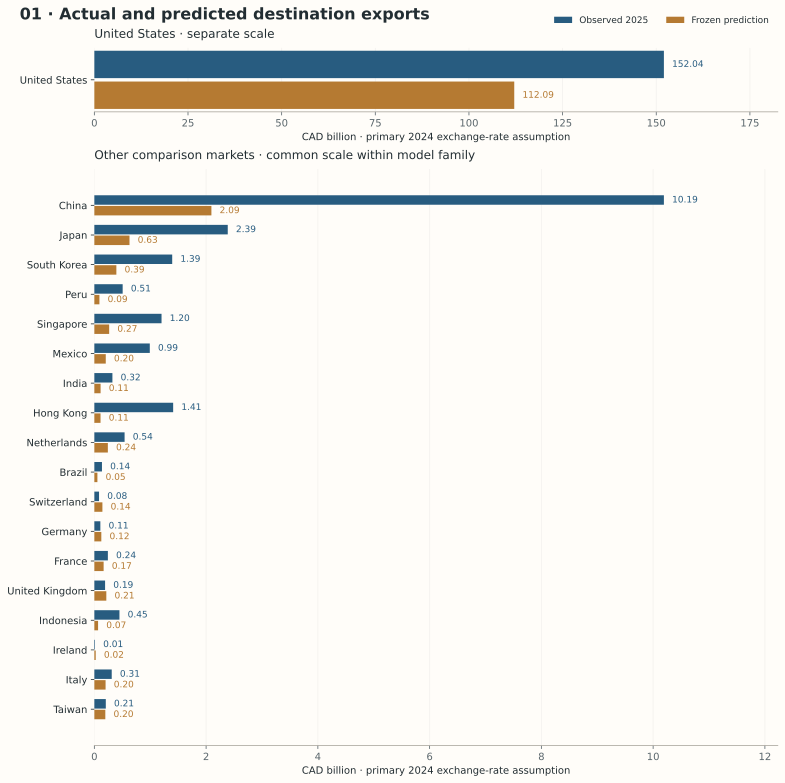
2025 Alberta outcomes below are an external diagnostic, meaning that previously frozen predictions are compared with observed Alberta exports that were not used to fit or select the model. This model produces an imputation-qualified one-year prediction, meaning that missing explanatory variables, including manufacturing shares, were replaced with estimated values from the fitted 2023 training-sample medians rather than directly observed data.
Intuition and relevance to Alberta
An established Alberta–destination product relationship carries information about buyers, pipelines, contracts and sunk entry costs. Linear regression asks whether last year’s relationship plus observable fundamentals explain the following year in an additive way. It supplies a transparent persistence baseline, rather than treating contemporaneous 2024 trade as a forecast.
Target, notation and mathematics
The inverse formula assumes full column rank; the code solves least squares numerically and uses a generalized inverse for inference where necessary. Matrix A contains the intercept, lag, numeric features and HS2 indicators. We omit one HS2 category in this model. Conditional-mean correctness requires the unexplained component to have mean zero given these predictors. That is a substantive assumption, not something a small residual can prove.
Data, preprocessing and fitting
Imputation-qualified dynamic estimate. Response: 2024 BACI log1p USD; predictors and lag: 2023. Exact 2023 GDP, population and internet exist for all seven countries. Canada and U.S. manufacturing shares are absent. The fully observed preferred specification is therefore unavailable; we retain the dynamic experiment using explicitly estimated 2023 training-fold medians. Those medians are assumptions, not recovered country observations. Alberta scoring uses the 2024 state and 2024 explanatory information, with missing manufacturing imputed by the fitted 2023 pipeline. No 2024 value is borrowed backward.
Numeric predictors are median-imputed and standardized inside each fit. HS2 is categorical. OLS minimizes squared errors in log1p trade. Dollar predictions use the shared training-only aggregate calibration described in the overview below; clipping negative back-transformed values to zero adds another approximation.
Validation logic
Leave one exporter out of the 2023→2024 transition; fit on the other six and predict that exporter’s 2024 outcomes from its observed 2023 state. This is exporter transfer within the estimation transition, not an independent later-year validation of Model 1. Unlike Model 6, there is no second untouched transition available after estimating this specification. A lag-only OLS diagnostic uses the same folds.
Internal validation results
WAPE = Weighted Absolute Percentage Error; MAE = Mean Absolute Error; RMSLE = Root Mean Squared Logarithmic Error.
| Held-out exporter | Cell WAPE | Cell MAE USD m | RMSLE | Destination WAPE | Spearman | Top-three overlap |
|---|---|---|---|---|---|---|
| CAN | 49.7% | 33.1 | 2.8 | 25.5% | 0.94 | 3/3 |
| CHN | 83.1% | 114.7 | 1.8 | 77.5% | 0.77 | 3/3 |
| JPN | 35.5% | 16.7 | 2.3 | 27.5% | 0.94 | 3/3 |
| KOR | 35.4% | 15.9 | 2.4 | 23.7% | 0.83 | 3/3 |
| MEX | 37.2% | 28.3 | 2.8 | 27.4% | 0.94 | 3/3 |
| GBR | 62.9% | 9.2 | 2.7 | 56.9% | 1.00 | 3/3 |
| USA | 51.2% | 63.9 | 1.7 | 36.1% | 0.77 | 3/3 |
Equal-exporter mean destination WAPE: 39.25%. Only six destinations exist per training exporter, so the internal overlap diagnostic uses top three; top ten would be uninformative. Cell metrics use USD; external diagnostics use CAD. Internal and external experiments are not interchangeable.
Alberta scoring assumptions
Alberta is a separate scoring entity. Canadian 2024 GDP, population, manufacturing share (imputed where absent), internet share, Canada-to-destination distance/border/language and external Canadian HS4 supply are Canadian proxies; they are not Alberta measurements. Destination demand and outside-network demand use 2024 BACI. Only Models 1 and 6 use Alberta’s actual 2024 destination–HS4 lag. All six use the same pre-2025 structural grid and identical disclosed persistence fallback. No 2025 destination or product outcome selected these lists.
Frozen 2025 predictions and external comparison
- Primary prediction
- CAD 119.0 bn
- Destination WAPE
- 33.33%
- Spearman
- 0.922
- Top ten overlap
- 7/10
Observed total: CAD 178.0 bn. External HS4-cell MAE: CAD 0 m; cell WAPE: 55.07%; RMSLE: 1.727. Mean absolute error over the frozen predicted top ten: CAD 5.3 bn; median: CAD 0.9 bn. Destination WAPE aggregates products before measuring error; cell WAPE can be higher because product errors cancel in totals.
| Predicted rank | Destination | Predicted CAD bn | Actual CAD bn | Signed error CAD bn | Absolute error CAD bn | Relative error |
|---|---|---|---|---|---|---|
| 1 | United States | 112.1 | 152.0 | -39.9 | 39.9 | -26.3% |
| 2 | China | 2.1 | 10.2 | -8.1 | 8.1 | -79.4% |
| 3 | Japan | 0.6 | 2.4 | -1.8 | 1.8 | -73.6% |
| 4 | South Korea | 0.4 | 1.4 | -1.0 | 1.0 | -71.7% |
| 5 | Singapore | 0.3 | 1.2 | -0.9 | 0.9 | -77.9% |
| 6 | Netherlands | 0.2 | 0.5 | -0.3 | 0.3 | -55.3% |
| 7 | United Kingdom | 0.2 | 0.2 | +0.0 | 0.0 | +11.6% |
| 8 | Mexico | 0.2 | 1.0 | -0.8 | 0.8 | -79.4% |
| 9 | Italy | 0.2 | 0.3 | -0.1 | 0.1 | -35.4% |
| 10 | Taiwan | 0.2 | 0.2 | -0.0 | 0.0 | -4.2% |
How values align across all destinations

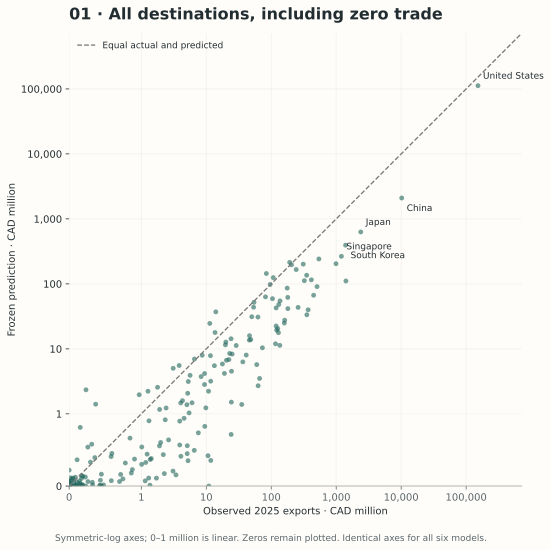
Top-five predicted HS4 products in each predicted destination
Destination and within-destination HS4 ranks were frozen in Phase A. Values are CAD million. Labels use exact-code CBSA T2026-2 heading text where available; later wording vintage is disclosed, and no tariff rule is inferred. BACI child fallbacks are labelled in the downloadable CSV. Actual 2025 product values were joined only afterward.
| HS4 rank | HS4 | Product heading | Predicted CAD m | Actual CAD m | Absolute error CAD m |
|---|---|---|---|---|---|
| 1 | 2709 | Petroleum oils and oils obtained from bituminous minerals, crude.Note: The General Tariff rate that applies to goods of this tariff item is the Most-Favoured-Nation Tariff rate. | 68,249 | 110,822 | 42,573 |
| 2 | 3901 | Polymers of ethylene, in primary forms. | 5,324 | 2,633 | 2,691 |
| 3 | 2710 | Petroleum oils and oils obtained from bituminous minerals, other than crude; preparations not elsewhere specified or included, containing by weight 70% or more of petroleum oils or of oils obtained from bituminous minerals, these oils being the basic constituents of the preparations; waste oils. | 2,824 | 2,129 | 695 |
| 4 | 2711 | Petroleum gases and other gaseous hydrocarbons. | 2,252 | 11,573 | 9,321 |
| 5 | 4407 | Wood sawn or chipped lengthwise, sliced or peeled, whether or not planed, sanded or end-jointed, of a thickness exceeding 6 mm. | 1,288 | 980 | 308 |
| HS4 rank | HS4 | Product heading | Predicted CAD m | Actual CAD m | Absolute error CAD m |
|---|---|---|---|---|---|
| 1 | 2709 | Petroleum oils and oils obtained from bituminous minerals, crude.Note: The General Tariff rate that applies to goods of this tariff item is the Most-Favoured-Nation Tariff rate. | 677 | 6,320 | 5,642 |
| 2 | 1205 | Rape or colza seeds, whether or not broken. | 249 | 431 | 182 |
| 3 | 3901 | Polymers of ethylene, in primary forms. | 248 | 589 | 341 |
| 4 | 2905 | Acyclic alcohols and their halogenated, sulphonated, nitrated or nitrosated derivatives. | 133 | 611 | 478 |
| 5 | 1001 | Wheat and meslin. | 112 | 355 | 244 |
| HS4 rank | HS4 | Product heading | Predicted CAD m | Actual CAD m | Absolute error CAD m |
|---|---|---|---|---|---|
| 1 | 2701 | Coal; briquettes, ovoids and similar solid fuels manufactured from coal. | 125 | 345 | 221 |
| 2 | 1001 | Wheat and meslin. | 80 | 231 | 151 |
| 3 | 1205 | Rape or colza seeds, whether or not broken. | 61 | 364 | 303 |
| 4 | 0203 | Meat of swine, fresh, chilled or frozen. | 58 | 362 | 304 |
| 5 | 2711 | Petroleum gases and other gaseous hydrocarbons. | 56 | 78 | 23 |
| HS4 rank | HS4 | Product heading | Predicted CAD m | Actual CAD m | Absolute error CAD m |
|---|---|---|---|---|---|
| 1 | 2701 | Coal; briquettes, ovoids and similar solid fuels manufactured from coal. | 122 | 180 | 58 |
| 2 | 7502 | Unwrought nickel. | 49 | 125 | 76 |
| 3 | 2709 | Petroleum oils and oils obtained from bituminous minerals, crude.Note: The General Tariff rate that applies to goods of this tariff item is the Most-Favoured-Nation Tariff rate. | 35 | 400 | 365 |
| 4 | 0202 | Meat of bovine animals, frozen. | 24 | 91 | 68 |
| 5 | 0203 | Meat of swine, fresh, chilled or frozen. | 23 | 124 | 100 |
| HS4 rank | HS4 | Product heading | Predicted CAD m | Actual CAD m | Absolute error CAD m |
|---|---|---|---|---|---|
| 1 | 2709 | Petroleum oils and oils obtained from bituminous minerals, crude.Note: The General Tariff rate that applies to goods of this tariff item is the Most-Favoured-Nation Tariff rate. | 157 | 1,088 | 931 |
| 2 | 3901 | Polymers of ethylene, in primary forms. | 35 | 42 | 7 |
| 3 | 7502 | Unwrought nickel. | 15 | 13 | 3 |
| 4 | 8431 | Parts suitable for use solely or principally with the machinery of headings 84.25 to 84.30. | 15 | 17 | 3 |
| 5 | 8412 | Other engines and motors. | 5 | 5 | 0 |
| HS4 rank | HS4 | Product heading | Predicted CAD m | Actual CAD m | Absolute error CAD m |
|---|---|---|---|---|---|
| 1 | 7502 | Unwrought nickel. | 135 | 238 | 103 |
| 2 | 2309 | Preparations of a kind used in animal feeding. | 18 | 118 | 100 |
| 3 | 8807 | Parts of goods of heading 88.01, 88.02 or 88.06. | 13 | 4 | 10 |
| 4 | 8105 | Cobalt mattes and other intermediate products of cobalt metallurgy; cobalt and articles thereof, including waste and scrap. | 9 | 40 | 31 |
| 5 | 2710 | Petroleum oils and oils obtained from bituminous minerals, other than crude; preparations not elsewhere specified or included, containing by weight 70% or more of petroleum oils or of oils obtained from bituminous minerals, these oils being the basic constituents of the preparations; waste oils. | 9 | 0 | 9 |
| HS4 rank | HS4 | Product heading | Predicted CAD m | Actual CAD m | Absolute error CAD m |
|---|---|---|---|---|---|
| 1 | 1001 | Wheat and meslin. | 42 | 76 | 34 |
| 2 | 2709 | Petroleum oils and oils obtained from bituminous minerals, crude.Note: The General Tariff rate that applies to goods of this tariff item is the Most-Favoured-Nation Tariff rate. | 28 | 0 | 28 |
| 3 | 8481 | Taps, cocks, valves and similar appliances for pipes, boiler shells, tanks, vats or the like, including pressure-reducing valves and thermostatically controlled valves. | 13 | 4 | 9 |
| 4 | 7502 | Unwrought nickel. | 12 | 0 | 12 |
| 5 | 8526 | Radar apparatus, radio navigational aid apparatus and radio remote control apparatus. | 8 | 4 | 4 |
| HS4 rank | HS4 | Product heading | Predicted CAD m | Actual CAD m | Absolute error CAD m |
|---|---|---|---|---|---|
| 1 | 3901 | Polymers of ethylene, in primary forms. | 34 | 59 | 24 |
| 2 | 1205 | Rape or colza seeds, whether or not broken. | 31 | 206 | 176 |
| 3 | 1001 | Wheat and meslin. | 22 | 79 | 57 |
| 4 | 0201 | Meat of bovine animals, fresh or chilled. | 19 | 232 | 212 |
| 5 | 3902 | Polymers of propylene or of other olefins, in primary forms. | 16 | 55 | 39 |
| HS4 rank | HS4 | Product heading | Predicted CAD m | Actual CAD m | Absolute error CAD m |
|---|---|---|---|---|---|
| 1 | 1001 | Wheat and meslin. | 57 | 156 | 98 |
| 2 | 8411 | Turbo-jets, turbo-propellers and other gas turbines. | 49 | 42 | 7 |
| 3 | 8807 | Parts of goods of heading 88.01, 88.02 or 88.06. | 15 | 11 | 4 |
| 4 | 9027 | Instruments and apparatus for physical or chemical analysis (for example, polarimeters, refractometers, spectrometers, gas or smoke analysis apparatus); instruments and apparatus for measuring or checking viscosity, porosity, expansion, surface tension or the like; instruments and apparatus for measuring or checking quantities of heat, sound or light (including exposure meters); microtomes. | 12 | 21 | 9 |
| 5 | 9018 | Instruments and appliances used in medical, surgical, dental or veterinary sciences, including scintigraphic apparatus, other electro-medical apparatus and sight-testing instruments. | 9 | 0 | 8 |
| HS4 rank | HS4 | Product heading | Predicted CAD m | Actual CAD m | Absolute error CAD m |
|---|---|---|---|---|---|
| 1 | 7204 | Ferrous waste and scrap; remelting scrap ingots of iron or steel. | 36 | 11 | 25 |
| 2 | 7502 | Unwrought nickel. | 26 | 38 | 12 |
| 3 | 8105 | Cobalt mattes and other intermediate products of cobalt metallurgy; cobalt and articles thereof, including waste and scrap. | 18 | 36 | 19 |
| 4 | 4911 | Other printed matter, including printed pictures and photographs. | 11 | 7 | 4 |
| 5 | 2004 | Other vegetables prepared or preserved otherwise than by vinegar or acetic acid, frozen, other than products of heading 20.06. | 11 | 11 | 1 |
Diagnostics and interpretation
The unstandardized lag coefficient is ρ = 0.7790; HC3 SE 0.0043; dyad-cluster SE 0.0112. A unit increase in log1p lagged trade changes predicted log1p next-year trade by ρ, conditional on other predictors. Matrix rank is 112/112, condition number 2.5e+02; exporter GDP/population correlation is 0.830. These are diagnostics of identification and numerical conditioning, not causal estimates.
Lag-only exporter-transfer cell WAPE: 23.89%; full model: 55.04%. This comparison asks whether the elaborate feature set adds much beyond persistent flows. Coefficients with HC3 and dyad-cluster standard errors are available for inspection.
Training residual variance across fitted-log quintiles ranges from 0.611 to 11.813; this is a descriptive heteroskedasticity check. The training-only dollar calibration factor is 1.145. Neither residual diagnostics nor aggregate matching validates a conditional economic mean.
Where the model over- and underpredicts

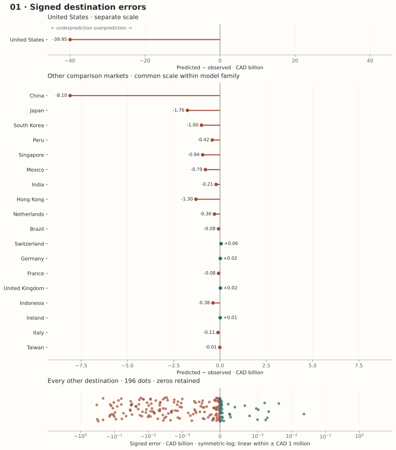
Predictive and structural critique
Predictive limitations. Linearity imposes one additive log-scale effect across products and destinations. Petroleum’s enormous dollar scale can remain badly predicted despite a small log error. A lag-dominated forecast may miss a new pipeline destination or abrupt policy/price shift. Aggregate calibration cannot repair cell-specific bias.
Structural and statistical limitations. The large row count is a large N with very small T: only one fitted transition, not thousands of independent time observations. Shared dyads and products induce correlation. GDP/population and product-market variables overlap; omitted contracts and logistics may correlate with regressors. Heteroskedasticity makes ordinary standard errors unreliable. HC3 does not handle clustering; 42 dyad clusters improve one dimension but do not account for product clustering or generated/calibrated forecasts. A common ρ cannot establish stable long-run dynamics. Log transformation preserves zeros but does not make residuals normal or homoskedastic.
What this model teaches us
A seemingly successful regression can mostly reflect yesterday’s trade. Its legible coefficients make assumptions inspectable, but neither lag persistence nor robust standard errors validates the economic mechanism. The missing manufacturing data weaken the preferred exact-year specification even when predictions look plausible.
02Elastic Net regressionStructural
Key Equation
Dataset Size
51,618 zero-filled 2024 cells enter the final fitting pipeline (42,268 positive and 9,350 zero-valued cells). Each cell is one exporter–destination–HS4 product observation across 42 directed foreign-country pairs and 1,229 headings. Domestic/self-pairs and products outside the fixed HS2022 universe are excluded; valid absent flows are retained as zeros. Missing explanatory variables are median-imputed rather than causing row deletion. Alberta 2025 outcomes are excluded. Exporter-held-out validation uses 7,374 test cells per fold, separate from the 44,244 cells supplied to each fold’s fit.
Key Assumption
After regularization, an additive linear predictor is assumed to represent the main trade relationships despite remaining nonlinearities.
Actual versus predicted Alberta destination exports

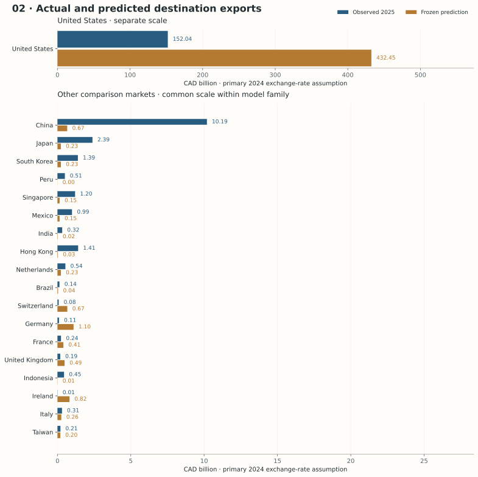
2025 Alberta outcomes below are an external diagnostic, meaning that previously frozen predictions are compared with observed Alberta exports that were not used to fit or select the model. This model produces structural model-implied trade potential based on 2024 information, rather than an explicitly dynamic one-year forecast. Missing explanatory variables are replaced with medians estimated from this model’s training sample; these estimated inputs are not directly observed values.
Intuition and relevance to Alberta
GDP, population, manufacturing and connectivity can convey overlapping country information. HS2 indicators add many correlated controls. Elastic Net keeps an additive log-trade structure while limiting how freely correlated predictors can trade off against one another. The question is whether coefficient restraint improves transfer to an unseen exporter.
Target, notation and mathematics
The intercept is unpenalized. The L1 term can shrink coefficients to zero; L2 shares shrinkage across correlated predictors. Their combination stabilizes an ill-conditioned additive model without claiming that selected variables are causal determinants. Standardizing numeric predictors makes penalty strength comparable across GDP, percentages and distance; HS2 remains one-hot categorical.
Data, preprocessing and fitting
All 51,618 zero-filled 2024 cells and the common features are used. Median imputation, scaling and one-hot encoding are fitted only on training exporters. A predeclared four-candidate grid uses α ∈ {0.01, 0.1} and r ∈ {0.2, 0.8}. The final grouped-CV choice is α = 0.01, r = 0.2, selected by equal-exporter mean log MSE. 97/111 fitted coefficients are nonzero. No Alberta outcome influences that choice.
Validation logic
Outer leave-one-exporter-out evaluates transfer. Within each outer training subset, a second leave-one-exporter-out loop selects α and r, so the outer exporter is excluded from tuning, preprocessing, fitting and dollar calibration. This nested design avoids reporting a tuned-on-the-test-fold score. Only seven exporters means high uncertainty about transfer; a random cell split would mix nearly identical country characteristics into training and validation. These are 2024 cross-sectional tests, not future-year forecasts.
Internal validation results
WAPE = Weighted Absolute Percentage Error; MAE = Mean Absolute Error; RMSLE = Root Mean Squared Logarithmic Error.
| Held-out exporter | Cell WAPE | Cell MAE USD m | RMSLE | Destination WAPE | Spearman | Top-three overlap |
|---|---|---|---|---|---|---|
| CAN | 104.0% | 69.3 | 4.0 | 50.6% | 0.77 | 3/3 |
| CHN | 100.9% | 139.2 | 3.5 | 52.6% | 0.77 | 3/3 |
| JPN | 91.6% | 43.1 | 4.0 | 88.0% | 0.89 | 3/3 |
| KOR | 86.6% | 38.8 | 3.9 | 49.4% | 0.71 | 3/3 |
| MEX | 79.2% | 60.2 | 4.6 | 69.1% | 0.89 | 3/3 |
| GBR | 163.7% | 23.9 | 4.3 | 119.4% | 0.94 | 3/3 |
| USA | 574.0% | 716.0 | 2.7 | 532.3% | 0.71 | 3/3 |
Equal-exporter mean destination WAPE: 137.35%. Only six destinations exist per training exporter, so the internal overlap diagnostic uses top three; top ten would be uninformative. Cell metrics use USD; external diagnostics use CAD. Internal and external experiments are not interchangeable.
Alberta scoring assumptions
Alberta is a separate scoring entity. Canadian 2024 GDP, population, manufacturing share (imputed where absent), internet share, Canada-to-destination distance/border/language and external Canadian HS4 supply are Canadian proxies; they are not Alberta measurements. Destination demand and outside-network demand use 2024 BACI. Only Models 1 and 6 use Alberta’s actual 2024 destination–HS4 lag. All six use the same pre-2025 structural grid and identical disclosed persistence fallback. No 2025 destination or product outcome selected these lists.
Frozen 2025 predictions and external comparison
- Primary prediction
- CAD 439.8 bn
- Destination WAPE
- 171.66%
- Spearman
- 0.804
- Top ten overlap
- 4/10
Observed total: CAD 178.0 bn. External HS4-cell MAE: CAD 2 m; cell WAPE: 320.62%; RMSLE: 4.584. Mean absolute error over the frozen predicted top ten: CAD 29.4 bn; median: CAD 0.7 bn. Destination WAPE aggregates products before measuring error; cell WAPE can be higher because product errors cancel in totals.
| Predicted rank | Destination | Predicted CAD bn | Actual CAD bn | Signed error CAD bn | Absolute error CAD bn | Relative error |
|---|---|---|---|---|---|---|
| 1 | United States | 432.4 | 152.0 | +280.4 | 280.4 | +184.4% |
| 2 | Germany | 1.1 | 0.1 | +1.0 | 1.0 | +922.0% |
| 3 | Ireland | 0.8 | 0.0 | +0.8 | 0.8 | +7159.6% |
| 4 | Switzerland | 0.7 | 0.1 | +0.6 | 0.6 | +698.8% |
| 5 | China | 0.7 | 10.2 | -9.5 | 9.5 | -93.5% |
| 6 | United Kingdom | 0.5 | 0.2 | +0.3 | 0.3 | +152.8% |
| 7 | France | 0.4 | 0.2 | +0.2 | 0.2 | +67.8% |
| 8 | Italy | 0.3 | 0.3 | -0.0 | 0.0 | -15.9% |
| 9 | South Korea | 0.2 | 1.4 | -1.2 | 1.2 | -83.2% |
| 10 | Netherlands | 0.2 | 0.5 | -0.3 | 0.3 | -56.9% |
How values align across all destinations

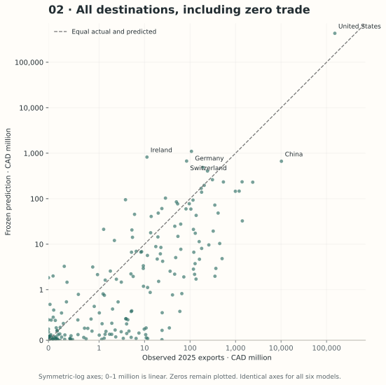
Top-five predicted HS4 products in each predicted destination
Destination and within-destination HS4 ranks were frozen in Phase A. Values are CAD million. Labels use exact-code CBSA T2026-2 heading text where available; later wording vintage is disclosed, and no tariff rule is inferred. BACI child fallbacks are labelled in the downloadable CSV. Actual 2025 product values were joined only afterward.
| HS4 rank | HS4 | Product heading | Predicted CAD m | Actual CAD m | Absolute error CAD m |
|---|---|---|---|---|---|
| 1 | 8411 | Turbo-jets, turbo-propellers and other gas turbines. | 45,595 | 362 | 45,233 |
| 2 | 7108 | Gold (including gold plated with platinum) unwrought or in semi-manufactured forms, or in powder form. | 31,790 | 8 | 31,782 |
| 3 | 3004 | Medicaments (excluding goods of heading 30.02, 30.05 or 30.06) consisting of mixed or unmixed products for therapeutic or prophylactic uses, put up in measured doses (including those in the form of transdermal administration systems) or in forms or packings for retail sale. | 23,515 | 1 | 23,515 |
| 4 | 8517 | Telephone sets, including smartphones and other telephones for cellular networks or for other wireless networks; other apparatus for the transmission or reception of voice, images or other data, including apparatus for communication in a wired or wireless network (such as a local or wide area network), other than transmission or reception apparatus of heading 84.43, 85.25, 85.27 or 85.28. | 19,689 | 44 | 19,645 |
| 5 | 8802 | Other aircraft (for example, helicopters, aeroplanes), except unmanned aircraft of heading 88.06; spacecraft (including satellites) and suborbital and spacecraft launch vehicles. | 15,241 | 25 | 15,216 |
| HS4 rank | HS4 | Product heading | Predicted CAD m | Actual CAD m | Absolute error CAD m |
|---|---|---|---|---|---|
| 1 | 8411 | Turbo-jets, turbo-propellers and other gas turbines. | 114 | 1 | 113 |
| 2 | 7108 | Gold (including gold plated with platinum) unwrought or in semi-manufactured forms, or in powder form. | 58 | 0 | 58 |
| 3 | 3004 | Medicaments (excluding goods of heading 30.02, 30.05 or 30.06) consisting of mixed or unmixed products for therapeutic or prophylactic uses, put up in measured doses (including those in the form of transdermal administration systems) or in forms or packings for retail sale. | 45 | 0 | 45 |
| 4 | 8517 | Telephone sets, including smartphones and other telephones for cellular networks or for other wireless networks; other apparatus for the transmission or reception of voice, images or other data, including apparatus for communication in a wired or wireless network (such as a local or wide area network), other than transmission or reception apparatus of heading 84.43, 85.25, 85.27 or 85.28. | 42 | 1 | 41 |
| 5 | 8703 | Motor cars and other motor vehicles principally designed for the transport of persons (other than those of heading 87.02), including station wagons and racing cars. | 40 | 1 | 39 |
| HS4 rank | HS4 | Product heading | Predicted CAD m | Actual CAD m | Absolute error CAD m |
|---|---|---|---|---|---|
| 1 | 8411 | Turbo-jets, turbo-propellers and other gas turbines. | 100 | 0 | 100 |
| 2 | 8802 | Other aircraft (for example, helicopters, aeroplanes), except unmanned aircraft of heading 88.06; spacecraft (including satellites) and suborbital and spacecraft launch vehicles. | 76 | 0 | 76 |
| 3 | 3004 | Medicaments (excluding goods of heading 30.02, 30.05 or 30.06) consisting of mixed or unmixed products for therapeutic or prophylactic uses, put up in measured doses (including those in the form of transdermal administration systems) or in forms or packings for retail sale. | 45 | 0 | 45 |
| 4 | 8517 | Telephone sets, including smartphones and other telephones for cellular networks or for other wireless networks; other apparatus for the transmission or reception of voice, images or other data, including apparatus for communication in a wired or wireless network (such as a local or wide area network), other than transmission or reception apparatus of heading 84.43, 85.25, 85.27 or 85.28. | 37 | 0 | 37 |
| 5 | 8703 | Motor cars and other motor vehicles principally designed for the transport of persons (other than those of heading 87.02), including station wagons and racing cars. | 26 | 0 | 26 |
| HS4 rank | HS4 | Product heading | Predicted CAD m | Actual CAD m | Absolute error CAD m |
|---|---|---|---|---|---|
| 1 | 7108 | Gold (including gold plated with platinum) unwrought or in semi-manufactured forms, or in powder form. | 184 | 0 | 184 |
| 2 | 3004 | Medicaments (excluding goods of heading 30.02, 30.05 or 30.06) consisting of mixed or unmixed products for therapeutic or prophylactic uses, put up in measured doses (including those in the form of transdermal administration systems) or in forms or packings for retail sale. | 52 | 0 | 52 |
| 3 | 8411 | Turbo-jets, turbo-propellers and other gas turbines. | 48 | 57 | 9 |
| 4 | 8703 | Motor cars and other motor vehicles principally designed for the transport of persons (other than those of heading 87.02), including station wagons and racing cars. | 19 | 0 | 19 |
| 5 | 8517 | Telephone sets, including smartphones and other telephones for cellular networks or for other wireless networks; other apparatus for the transmission or reception of voice, images or other data, including apparatus for communication in a wired or wireless network (such as a local or wide area network), other than transmission or reception apparatus of heading 84.43, 85.25, 85.27 or 85.28. | 18 | 0 | 17 |
| HS4 rank | HS4 | Product heading | Predicted CAD m | Actual CAD m | Absolute error CAD m |
|---|---|---|---|---|---|
| 1 | 7108 | Gold (including gold plated with platinum) unwrought or in semi-manufactured forms, or in powder form. | 87 | 0 | 87 |
| 2 | 8411 | Turbo-jets, turbo-propellers and other gas turbines. | 64 | 0 | 64 |
| 3 | 8542 | Electronic integrated circuits. | 25 | 6 | 19 |
| 4 | 2709 | Petroleum oils and oils obtained from bituminous minerals, crude.Note: The General Tariff rate that applies to goods of this tariff item is the Most-Favoured-Nation Tariff rate. | 20 | 6,320 | 6,299 |
| 5 | 3004 | Medicaments (excluding goods of heading 30.02, 30.05 or 30.06) consisting of mixed or unmixed products for therapeutic or prophylactic uses, put up in measured doses (including those in the form of transdermal administration systems) or in forms or packings for retail sale. | 19 | 0 | 19 |
| HS4 rank | HS4 | Product heading | Predicted CAD m | Actual CAD m | Absolute error CAD m |
|---|---|---|---|---|---|
| 1 | 7108 | Gold (including gold plated with platinum) unwrought or in semi-manufactured forms, or in powder form. | 79 | 0 | 79 |
| 2 | 8411 | Turbo-jets, turbo-propellers and other gas turbines. | 48 | 6 | 42 |
| 3 | 8703 | Motor cars and other motor vehicles principally designed for the transport of persons (other than those of heading 87.02), including station wagons and racing cars. | 20 | 0 | 20 |
| 4 | 3004 | Medicaments (excluding goods of heading 30.02, 30.05 or 30.06) consisting of mixed or unmixed products for therapeutic or prophylactic uses, put up in measured doses (including those in the form of transdermal administration systems) or in forms or packings for retail sale. | 20 | 0 | 20 |
| 5 | 8802 | Other aircraft (for example, helicopters, aeroplanes), except unmanned aircraft of heading 88.06; spacecraft (including satellites) and suborbital and spacecraft launch vehicles. | 16 | 5 | 10 |
| HS4 rank | HS4 | Product heading | Predicted CAD m | Actual CAD m | Absolute error CAD m |
|---|---|---|---|---|---|
| 1 | 8411 | Turbo-jets, turbo-propellers and other gas turbines. | 42 | 42 | 0 |
| 2 | 7108 | Gold (including gold plated with platinum) unwrought or in semi-manufactured forms, or in powder form. | 28 | 0 | 28 |
| 3 | 3004 | Medicaments (excluding goods of heading 30.02, 30.05 or 30.06) consisting of mixed or unmixed products for therapeutic or prophylactic uses, put up in measured doses (including those in the form of transdermal administration systems) or in forms or packings for retail sale. | 17 | 0 | 17 |
| 4 | 8703 | Motor cars and other motor vehicles principally designed for the transport of persons (other than those of heading 87.02), including station wagons and racing cars. | 16 | 0 | 16 |
| 5 | 8517 | Telephone sets, including smartphones and other telephones for cellular networks or for other wireless networks; other apparatus for the transmission or reception of voice, images or other data, including apparatus for communication in a wired or wireless network (such as a local or wide area network), other than transmission or reception apparatus of heading 84.43, 85.25, 85.27 or 85.28. | 15 | 3 | 12 |
| HS4 rank | HS4 | Product heading | Predicted CAD m | Actual CAD m | Absolute error CAD m |
|---|---|---|---|---|---|
| 1 | 7108 | Gold (including gold plated with platinum) unwrought or in semi-manufactured forms, or in powder form. | 24 | 0 | 24 |
| 2 | 8411 | Turbo-jets, turbo-propellers and other gas turbines. | 21 | 42 | 21 |
| 3 | 3004 | Medicaments (excluding goods of heading 30.02, 30.05 or 30.06) consisting of mixed or unmixed products for therapeutic or prophylactic uses, put up in measured doses (including those in the form of transdermal administration systems) or in forms or packings for retail sale. | 12 | 0 | 12 |
| 4 | 8703 | Motor cars and other motor vehicles principally designed for the transport of persons (other than those of heading 87.02), including station wagons and racing cars. | 10 | 0 | 10 |
| 5 | 8517 | Telephone sets, including smartphones and other telephones for cellular networks or for other wireless networks; other apparatus for the transmission or reception of voice, images or other data, including apparatus for communication in a wired or wireless network (such as a local or wide area network), other than transmission or reception apparatus of heading 84.43, 85.25, 85.27 or 85.28. | 10 | 1 | 9 |
| HS4 rank | HS4 | Product heading | Predicted CAD m | Actual CAD m | Absolute error CAD m |
|---|---|---|---|---|---|
| 1 | 8411 | Turbo-jets, turbo-propellers and other gas turbines. | 20 | 0 | 20 |
| 2 | 7108 | Gold (including gold plated with platinum) unwrought or in semi-manufactured forms, or in powder form. | 15 | 0 | 15 |
| 3 | 8542 | Electronic integrated circuits. | 11 | 0 | 11 |
| 4 | 8517 | Telephone sets, including smartphones and other telephones for cellular networks or for other wireless networks; other apparatus for the transmission or reception of voice, images or other data, including apparatus for communication in a wired or wireless network (such as a local or wide area network), other than transmission or reception apparatus of heading 84.43, 85.25, 85.27 or 85.28. | 9 | 1 | 8 |
| 5 | 2709 | Petroleum oils and oils obtained from bituminous minerals, crude.Note: The General Tariff rate that applies to goods of this tariff item is the Most-Favoured-Nation Tariff rate. | 8 | 400 | 392 |
| HS4 rank | HS4 | Product heading | Predicted CAD m | Actual CAD m | Absolute error CAD m |
|---|---|---|---|---|---|
| 1 | 8411 | Turbo-jets, turbo-propellers and other gas turbines. | 20 | 1 | 19 |
| 2 | 8517 | Telephone sets, including smartphones and other telephones for cellular networks or for other wireless networks; other apparatus for the transmission or reception of voice, images or other data, including apparatus for communication in a wired or wireless network (such as a local or wide area network), other than transmission or reception apparatus of heading 84.43, 85.25, 85.27 or 85.28. | 12 | 0 | 12 |
| 3 | 3004 | Medicaments (excluding goods of heading 30.02, 30.05 or 30.06) consisting of mixed or unmixed products for therapeutic or prophylactic uses, put up in measured doses (including those in the form of transdermal administration systems) or in forms or packings for retail sale. | 10 | 0 | 10 |
| 4 | 8703 | Motor cars and other motor vehicles principally designed for the transport of persons (other than those of heading 87.02), including station wagons and racing cars. | 8 | 7 | 1 |
| 5 | 8471 | Automatic data processing machines and units thereof; magnetic or optical readers, machines for transcribing data onto data media in coded form and machines for processing such data, not elsewhere specified or included. | 7 | 0 | 7 |
Diagnostics and interpretation
Final training log RMSE is 3.815; the training-only dollar calibration factor is 0.659. A low log loss can coexist with distorted destination dollar totals because shrinkage acts on the transformed scale. Every nested parameter choice and candidate loss is retained.
Where the model over- and underpredicts

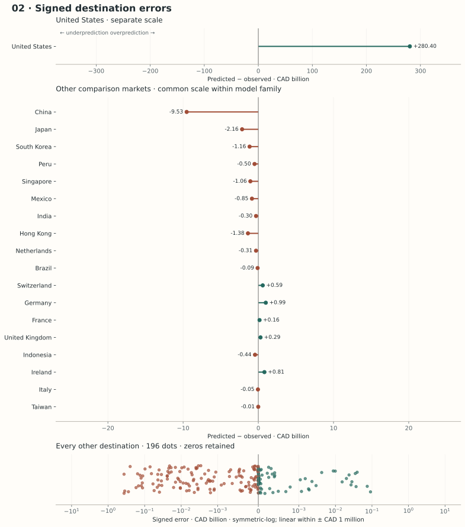
Predictive and structural critique
Predictive limitations. Shrinkage introduces bias and cannot represent a product-specific distance threshold or supply–demand interaction unless it is explicitly engineered. Selecting among four candidates is intentionally modest; seven-exporter scores are noisy.
Structural and statistical limitations. Regularization does not solve omitted-variable bias, reverse causality or dependence among cells. Selected coefficients can change when an exporter leaves the sample. One-hot HS2 controls broad sectors, not HS4-specific economic identities. The model maps a contemporaneous 2024 pattern onto Canada-proxy Alberta inputs; it has no equation governing 2024→2025 adjustment.
What this model teaches us
More stable coefficients can be worth accepting some predictive bias. Yet regularization repairs coefficient instability, not the economic validity of a linear structural-potential model or the absence of a time-transition mechanism.
03Random Forest regressionStructural
Key Equation
Dataset Size
51,618 zero-filled 2024 cells enter the final fitting pipeline (42,268 positive and 9,350 zero-valued cells). Each cell is one exporter–destination–HS4 product observation across 42 directed foreign-country pairs and 1,229 headings. Domestic/self-pairs and products outside the fixed HS2022 universe are excluded; valid absent flows are retained as zeros. Missing explanatory variables are median-imputed rather than causing row deletion. Alberta 2025 outcomes are excluded. Exporter-held-out validation uses 7,374 test cells per fold, separate from the 44,244 cells supplied to each fold’s fit.
Key Assumption
Tree-based transfer to Alberta assumes its Canadian-proxy scoring patterns are sufficiently represented in the seven-country training network.
Actual versus predicted Alberta destination exports

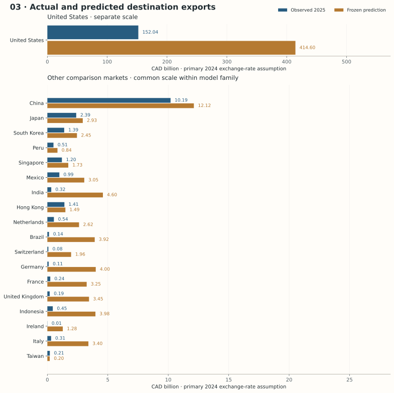
2025 Alberta outcomes below are an external diagnostic, meaning that previously frozen predictions are compared with observed Alberta exports that were not used to fit or select the model. This model produces structural model-implied trade potential based on 2024 information, rather than an explicitly dynamic one-year forecast. Missing explanatory variables are replaced with medians estimated from this model’s training sample; these estimated inputs are not directly observed values.
Intuition and relevance to Alberta
A forest can learn that distance matters differently when importer demand is high or exporter supply is weak. A Canada–U.S. border split can interact with a product’s external supply without imposing a single gravity coefficient. Many randomized trees reduce the variability of any one partition.
Target, notation and mathematics
Each tree receives a bootstrap sample of the training cells and a randomized subset of candidate features at each split. Within a leaf it estimates a local mean log1p flow. Averaging lowers variance when trees make different errors; dependence between trees limits that gain. This is interpolation within partitions, not an economic equation for trade adjustment.
Data, preprocessing and fitting
Use the full zero-filled 2024 grid, the common feature family and a fresh training-only preprocessing pipeline. The forest has 120 trees, depth at most 16, at least 8 samples per leaf, 70% of transformed features considered per split, bootstrap enabled, seed 338. These manageable settings were declared before 2025 evaluation. It fits squared error in log1p trade; the shared aggregate calibration returns dollar predictions.
Validation logic
Leave one exporter out of 2024; fit preprocessing, forest and retransformation on the other six. Hyperparameters are fixed rather than selected on the held-out exporter. Bootstrap cells are not independent dyads/products, so the bootstrap is an algorithmic device, not a valid inferential resampling scheme here. This is transfer validation, not temporal validation.
Internal validation results
WAPE = Weighted Absolute Percentage Error; MAE = Mean Absolute Error; RMSLE = Root Mean Squared Logarithmic Error.
| Held-out exporter | Cell WAPE | Cell MAE USD m | RMSLE | Destination WAPE | Spearman | Top-three overlap |
|---|---|---|---|---|---|---|
| CAN | 88.2% | 58.7 | 4.2 | 57.5% | 0.71 | 2/3 |
| CHN | 80.3% | 110.8 | 3.5 | 8.8% | 0.94 | 3/3 |
| JPN | 67.4% | 31.8 | 3.7 | 47.0% | 0.77 | 3/3 |
| KOR | 77.2% | 34.6 | 3.8 | 59.2% | 0.77 | 3/3 |
| MEX | 82.6% | 62.8 | 4.8 | 69.5% | 0.43 | 2/3 |
| GBR | 136.2% | 19.9 | 4.0 | 100.5% | 0.94 | 2/3 |
| USA | 79.5% | 99.2 | 2.9 | 65.1% | 0.71 | 3/3 |
Equal-exporter mean destination WAPE: 58.22%. Only six destinations exist per training exporter, so the internal overlap diagnostic uses top three; top ten would be uninformative. Cell metrics use USD; external diagnostics use CAD. Internal and external experiments are not interchangeable.
Alberta scoring assumptions
Alberta is a separate scoring entity. Canadian 2024 GDP, population, manufacturing share (imputed where absent), internet share, Canada-to-destination distance/border/language and external Canadian HS4 supply are Canadian proxies; they are not Alberta measurements. Destination demand and outside-network demand use 2024 BACI. Only Models 1 and 6 use Alberta’s actual 2024 destination–HS4 lag. All six use the same pre-2025 structural grid and identical disclosed persistence fallback. No 2025 destination or product outcome selected these lists.
Frozen 2025 predictions and external comparison
- Primary prediction
- CAD 550.4 bn
- Destination WAPE
- 209.35%
- Spearman
- 0.820
- Top ten overlap
- 4/10
Observed total: CAD 178.0 bn. External HS4-cell MAE: CAD 3 m; cell WAPE: 356.87%; RMSLE: 6.948. Mean absolute error over the frozen predicted top ten: CAD 29.1 bn; median: CAD 3.4 bn. Destination WAPE aggregates products before measuring error; cell WAPE can be higher because product errors cancel in totals.
| Predicted rank | Destination | Predicted CAD bn | Actual CAD bn | Signed error CAD bn | Absolute error CAD bn | Relative error |
|---|---|---|---|---|---|---|
| 1 | United States | 414.6 | 152.0 | +262.6 | 262.6 | +172.7% |
| 2 | China | 12.1 | 10.2 | +1.9 | 1.9 | +18.9% |
| 3 | India | 4.6 | 0.3 | +4.3 | 4.3 | +1321.3% |
| 4 | Germany | 4.0 | 0.1 | +3.9 | 3.9 | +3621.5% |
| 5 | Indonesia | 4.0 | 0.4 | +3.5 | 3.5 | +785.3% |
| 6 | Brazil | 3.9 | 0.1 | +3.8 | 3.8 | +2772.4% |
| 7 | United Kingdom | 3.4 | 0.2 | +3.3 | 3.3 | +1693.6% |
| 8 | Italy | 3.4 | 0.3 | +3.1 | 3.1 | +991.8% |
| 9 | France | 3.3 | 0.2 | +3.0 | 3.0 | +1243.5% |
| 10 | Mexico | 3.1 | 1.0 | +2.1 | 2.1 | +207.7% |
How values align across all destinations

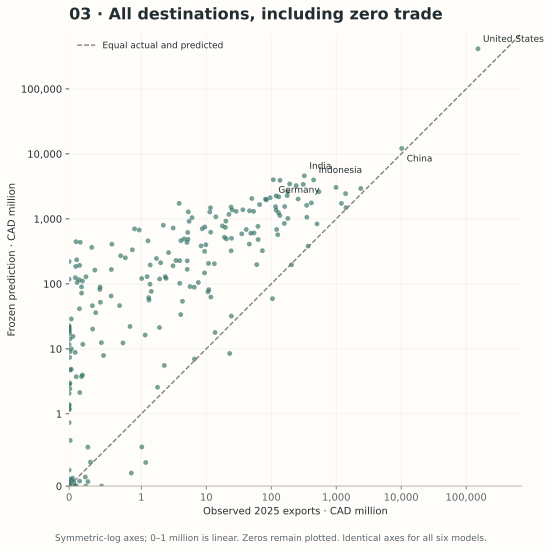
Top-five predicted HS4 products in each predicted destination
Destination and within-destination HS4 ranks were frozen in Phase A. Values are CAD million. Labels use exact-code CBSA T2026-2 heading text where available; later wording vintage is disclosed, and no tariff rule is inferred. BACI child fallbacks are labelled in the downloadable CSV. Actual 2025 product values were joined only afterward.
| HS4 rank | HS4 | Product heading | Predicted CAD m | Actual CAD m | Absolute error CAD m |
|---|---|---|---|---|---|
| 1 | 3004 | Medicaments (excluding goods of heading 30.02, 30.05 or 30.06) consisting of mixed or unmixed products for therapeutic or prophylactic uses, put up in measured doses (including those in the form of transdermal administration systems) or in forms or packings for retail sale. | 18,382 | 1 | 18,381 |
| 2 | 2709 | Petroleum oils and oils obtained from bituminous minerals, crude.Note: The General Tariff rate that applies to goods of this tariff item is the Most-Favoured-Nation Tariff rate. | 16,624 | 110,822 | 94,198 |
| 3 | 8411 | Turbo-jets, turbo-propellers and other gas turbines. | 14,663 | 362 | 14,301 |
| 4 | 2710 | Petroleum oils and oils obtained from bituminous minerals, other than crude; preparations not elsewhere specified or included, containing by weight 70% or more of petroleum oils or of oils obtained from bituminous minerals, these oils being the basic constituents of the preparations; waste oils. | 14,645 | 2,129 | 12,516 |
| 5 | 8703 | Motor cars and other motor vehicles principally designed for the transport of persons (other than those of heading 87.02), including station wagons and racing cars. | 14,547 | 10 | 14,537 |
| HS4 rank | HS4 | Product heading | Predicted CAD m | Actual CAD m | Absolute error CAD m |
|---|---|---|---|---|---|
| 1 | 7108 | Gold (including gold plated with platinum) unwrought or in semi-manufactured forms, or in powder form. | 1,211 | 0 | 1,211 |
| 2 | 2601 | Iron ores and concentrates, including roasted iron pyrites. | 1,121 | 0 | 1,121 |
| 3 | 8411 | Turbo-jets, turbo-propellers and other gas turbines. | 653 | 0 | 653 |
| 4 | 3104 | Mineral or chemical fertilizers, potassic. | 648 | 0 | 648 |
| 5 | 1001 | Wheat and meslin. | 647 | 355 | 291 |
| HS4 rank | HS4 | Product heading | Predicted CAD m | Actual CAD m | Absolute error CAD m |
|---|---|---|---|---|---|
| 1 | 7108 | Gold (including gold plated with platinum) unwrought or in semi-manufactured forms, or in powder form. | 650 | 0 | 650 |
| 2 | 0713 | Dried leguminous vegetables, shelled, whether or not skinned or split. | 549 | 153 | 396 |
| 3 | 8411 | Turbo-jets, turbo-propellers and other gas turbines. | 442 | 2 | 441 |
| 4 | 3104 | Mineral or chemical fertilizers, potassic. | 298 | 0 | 298 |
| 5 | 8802 | Other aircraft (for example, helicopters, aeroplanes), except unmanned aircraft of heading 88.06; spacecraft (including satellites) and suborbital and spacecraft launch vehicles. | 249 | 0 | 249 |
| HS4 rank | HS4 | Product heading | Predicted CAD m | Actual CAD m | Absolute error CAD m |
|---|---|---|---|---|---|
| 1 | 7108 | Gold (including gold plated with platinum) unwrought or in semi-manufactured forms, or in powder form. | 547 | 0 | 547 |
| 2 | 1001 | Wheat and meslin. | 477 | 0 | 477 |
| 3 | 8411 | Turbo-jets, turbo-propellers and other gas turbines. | 473 | 1 | 473 |
| 4 | 3004 | Medicaments (excluding goods of heading 30.02, 30.05 or 30.06) consisting of mixed or unmixed products for therapeutic or prophylactic uses, put up in measured doses (including those in the form of transdermal administration systems) or in forms or packings for retail sale. | 288 | 0 | 288 |
| 5 | 2601 | Iron ores and concentrates, including roasted iron pyrites. | 228 | 0 | 228 |
| HS4 rank | HS4 | Product heading | Predicted CAD m | Actual CAD m | Absolute error CAD m |
|---|---|---|---|---|---|
| 1 | 1001 | Wheat and meslin. | 968 | 258 | 709 |
| 2 | 7108 | Gold (including gold plated with platinum) unwrought or in semi-manufactured forms, or in powder form. | 514 | 0 | 514 |
| 3 | 3104 | Mineral or chemical fertilizers, potassic. | 315 | 0 | 315 |
| 4 | 2601 | Iron ores and concentrates, including roasted iron pyrites. | 221 | 0 | 221 |
| 5 | 1201 | Soya beans, whether or not broken. | 131 | 0 | 131 |
| HS4 rank | HS4 | Product heading | Predicted CAD m | Actual CAD m | Absolute error CAD m |
|---|---|---|---|---|---|
| 1 | 8411 | Turbo-jets, turbo-propellers and other gas turbines. | 685 | 0 | 685 |
| 2 | 1001 | Wheat and meslin. | 584 | 5 | 579 |
| 3 | 3104 | Mineral or chemical fertilizers, potassic. | 489 | 0 | 489 |
| 4 | 3004 | Medicaments (excluding goods of heading 30.02, 30.05 or 30.06) consisting of mixed or unmixed products for therapeutic or prophylactic uses, put up in measured doses (including those in the form of transdermal administration systems) or in forms or packings for retail sale. | 416 | 0 | 416 |
| 5 | 8802 | Other aircraft (for example, helicopters, aeroplanes), except unmanned aircraft of heading 88.06; spacecraft (including satellites) and suborbital and spacecraft launch vehicles. | 163 | 0 | 163 |
| HS4 rank | HS4 | Product heading | Predicted CAD m | Actual CAD m | Absolute error CAD m |
|---|---|---|---|---|---|
| 1 | 7108 | Gold (including gold plated with platinum) unwrought or in semi-manufactured forms, or in powder form. | 596 | 0 | 596 |
| 2 | 8411 | Turbo-jets, turbo-propellers and other gas turbines. | 472 | 6 | 466 |
| 3 | 3004 | Medicaments (excluding goods of heading 30.02, 30.05 or 30.06) consisting of mixed or unmixed products for therapeutic or prophylactic uses, put up in measured doses (including those in the form of transdermal administration systems) or in forms or packings for retail sale. | 336 | 0 | 336 |
| 4 | 1001 | Wheat and meslin. | 242 | 76 | 166 |
| 5 | 8802 | Other aircraft (for example, helicopters, aeroplanes), except unmanned aircraft of heading 88.06; spacecraft (including satellites) and suborbital and spacecraft launch vehicles. | 71 | 5 | 65 |
| HS4 rank | HS4 | Product heading | Predicted CAD m | Actual CAD m | Absolute error CAD m |
|---|---|---|---|---|---|
| 1 | 1001 | Wheat and meslin. | 586 | 156 | 431 |
| 2 | 7108 | Gold (including gold plated with platinum) unwrought or in semi-manufactured forms, or in powder form. | 481 | 0 | 481 |
| 3 | 8411 | Turbo-jets, turbo-propellers and other gas turbines. | 295 | 42 | 253 |
| 4 | 3004 | Medicaments (excluding goods of heading 30.02, 30.05 or 30.06) consisting of mixed or unmixed products for therapeutic or prophylactic uses, put up in measured doses (including those in the form of transdermal administration systems) or in forms or packings for retail sale. | 254 | 0 | 254 |
| 5 | 0713 | Dried leguminous vegetables, shelled, whether or not skinned or split. | 75 | 10 | 65 |
| HS4 rank | HS4 | Product heading | Predicted CAD m | Actual CAD m | Absolute error CAD m |
|---|---|---|---|---|---|
| 1 | 7108 | Gold (including gold plated with platinum) unwrought or in semi-manufactured forms, or in powder form. | 607 | 0 | 607 |
| 2 | 8411 | Turbo-jets, turbo-propellers and other gas turbines. | 433 | 42 | 391 |
| 3 | 3004 | Medicaments (excluding goods of heading 30.02, 30.05 or 30.06) consisting of mixed or unmixed products for therapeutic or prophylactic uses, put up in measured doses (including those in the form of transdermal administration systems) or in forms or packings for retail sale. | 263 | 0 | 263 |
| 4 | 2601 | Iron ores and concentrates, including roasted iron pyrites. | 83 | 0 | 83 |
| 5 | 1001 | Wheat and meslin. | 64 | 0 | 63 |
| HS4 rank | HS4 | Product heading | Predicted CAD m | Actual CAD m | Absolute error CAD m |
|---|---|---|---|---|---|
| 1 | 3004 | Medicaments (excluding goods of heading 30.02, 30.05 or 30.06) consisting of mixed or unmixed products for therapeutic or prophylactic uses, put up in measured doses (including those in the form of transdermal administration systems) or in forms or packings for retail sale. | 106 | 0 | 106 |
| 2 | 8479 | Machines and mechanical appliances having individual functions, not specified or included elsewhere in this Chapter. | 75 | 14 | 61 |
| 3 | 8483 | Transmission shafts (including cam shafts and crank shafts) and cranks; bearing housings and plain shaft bearings; gears and gearing; ball or roller screws; gear boxes and other speed changers, including torque converters; flywheels and pulleys, including pulley blocks; clutches and shaft couplings (including universal joints). | 69 | 0 | 69 |
| 4 | 8517 | Telephone sets, including smartphones and other telephones for cellular networks or for other wireless networks; other apparatus for the transmission or reception of voice, images or other data, including apparatus for communication in a wired or wireless network (such as a local or wide area network), other than transmission or reception apparatus of heading 84.43, 85.25, 85.27 or 85.28. | 67 | 0 | 67 |
| 5 | 7601 | Unwrought aluminum. | 64 | 0 | 64 |
Diagnostics and interpretation
Final training log RMSE 2.988; dollar calibration 2.052. The leading raw-feature permutation diagnostics on the held-out Canadian exporter are log_external_supply (25.769 log-MSE increase), log_external_demand (7.931 log-MSE increase), common_border (4.520 log-MSE increase), log_distance (3.530 log-MSE increase). Permuting correlated market variables can make unrealistic combinations; these measures are descriptive, not causal importance.
Where the model over- and underpredicts

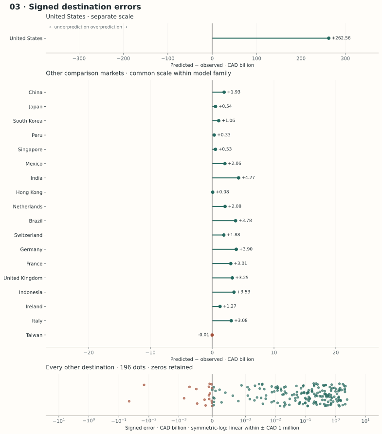
Predictive and structural critique
Predictive limitations. Forests predict combinations of training leaf values and extrapolate poorly outside observed national scale, geography and product-market support. Log fitting moderates crude petroleum’s domination, but dollar retransformation can still be driven by a few giant flows. Newly scored destinations are not equivalent to the six importers seen by each training exporter.
Structural and statistical limitations. A threshold does not identify an economic mechanism. Correlated cells and predictors can mask which feature actually matters. Conventional impurity importance favors predictors with more split opportunities; we report held-out permutation diagnostics instead. Neither measure establishes causality. Canadian national capability can create implausibly large provincial structural values. There is no one-year dynamics.
What this model teaches us
Good interpolation can discover useful interactions while leaving economic interpretation weak. A tree’s apparent “distance effect” is a sample partition, not evidence that reducing distance would cause the predicted export gain.
04Multilayer PerceptronStructural
Key Equation
Dataset Size
43,875 2024 cells fit the network weights; 7,743 cells are reserved for training-only early stopping (15%). 51,618 zero-filled 2024 cells enter the final fitting pipeline (42,268 positive and 9,350 zero-valued cells). Preprocessing and dollar calibration use all input cells. Each cell is one exporter–destination–HS4 product observation across 42 directed foreign-country pairs and 1,229 headings. Domestic/self-pairs and products outside the fixed HS2022 universe are excluded; valid absent flows are retained as zeros. Missing explanatory variables are median-imputed rather than causing row deletion. Alberta 2025 outcomes are excluded. Exporter-held-out validation uses 7,374 test cells per fold, separate from the 44,244 cells supplied to each fold’s fit.
Key Assumption
Standardized predictors are assumed to contain stable structure that lets the learned neural mapping transfer from the training network to Alberta.
Actual versus predicted Alberta destination exports

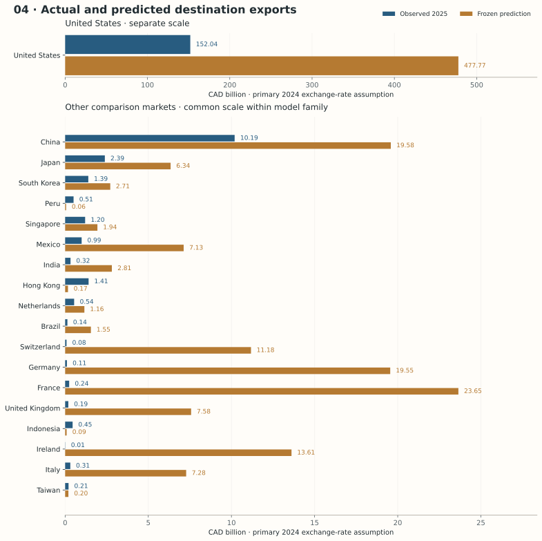
2025 Alberta outcomes below are an external diagnostic, meaning that previously frozen predictions are compared with observed Alberta exports that were not used to fit or select the model. This model produces structural model-implied trade potential based on 2024 information, rather than an explicitly dynamic one-year forecast. Missing explanatory variables are replaced with medians estimated from this model’s training sample; these estimated inputs are not directly observed values.
Intuition and relevance to Alberta
A small neural network can combine market size, connectivity and product-side evidence into nonlinear hidden representations. In this trade dataset, the experiment asks whether learned interactions transfer better than explicit linear coefficients or tree partitions—not whether adding depth automatically helps.
Target, notation and mathematics
The two hidden layers contain 32 and 16 units. Each hidden activation is bounded between −1 and 1; the output estimates log1p 2024 trade. Backpropagation uses the chain rule to pass each log-scale prediction error through the layers; Adam updates weights using adaptive moving estimates of gradients. L2 weight decay discourages large weights. The finite network’s practical fit depends on optimization, regularization and data support; universal approximation is not a performance guarantee.
Data, preprocessing and fitting
Common 2024 features, training-fold median imputation and standardization, HS2 one-hot indicators; no numeric HS-code ordering. Scaling is critical: otherwise percentage-valued connectivity and huge economic/product scales create uneven optimization geometry. Adam uses learning rate 0.001, batches of 512, L2 α = 0.1, maximum 180 epochs, 15% training-only internal validation and patience 15, seed 338. Random cell early stopping stays within outer training exporters but does not itself enforce exporter separation.
Documented stability repair: the initial 48/24 ReLU network produced finite but absurdly large transformed predictions when pre-2025 scoring GDP and connectivity fell far outside the seven-country training range. ReLU can extend a fitted slope indefinitely; exponentiation magnified that extrapolation. We simplified to fixed 32/16 bounded tanh layers and stronger L2 regularization, retaining the MLP family and identical common inputs. The repair was justified by historical feature support and the frozen transformed predictions, not by minimizing Alberta’s observed 2025 error. All final models were then refitted and frozen again. Bounded hidden activations still do not impose an Alberta export-capacity constraint.
Validation logic
Outer leave-one-exporter-out tests 2024 transfer. The internal stopping subset never includes that outer exporter. Architecture and optimization settings are fixed before evaluation. Only one seed is used: the page reports optimizer dependence rather than claiming seed-robust dominance. The 2025 comparison remains an external diagnostic.
Internal validation results
WAPE = Weighted Absolute Percentage Error; MAE = Mean Absolute Error; RMSLE = Root Mean Squared Logarithmic Error.
| Held-out exporter | Cell WAPE | Cell MAE USD m | RMSLE | Destination WAPE | Spearman | Top-three overlap |
|---|---|---|---|---|---|---|
| CAN | 221.9% | 147.8 | 4.0 | 136.1% | 0.94 | 3/3 |
| CHN | 429.5% | 592.5 | 3.9 | 394.6% | 0.49 | 2/3 |
| JPN | 247.2% | 116.4 | 3.9 | 203.2% | 0.66 | 3/3 |
| KOR | 135.0% | 60.4 | 4.0 | 72.8% | 0.77 | 3/3 |
| MEX | 94.1% | 71.6 | 4.5 | 14.6% | 0.83 | 3/3 |
| GBR | 96.5% | 14.1 | 3.9 | 94.8% | 0.94 | 3/3 |
| USA | 95.3% | 118.9 | 3.3 | 66.3% | 0.94 | 3/3 |
Equal-exporter mean destination WAPE: 140.36%. Only six destinations exist per training exporter, so the internal overlap diagnostic uses top three; top ten would be uninformative. Cell metrics use USD; external diagnostics use CAD. Internal and external experiments are not interchangeable.
Alberta scoring assumptions
Alberta is a separate scoring entity. Canadian 2024 GDP, population, manufacturing share (imputed where absent), internet share, Canada-to-destination distance/border/language and external Canadian HS4 supply are Canadian proxies; they are not Alberta measurements. Destination demand and outside-network demand use 2024 BACI. Only Models 1 and 6 use Alberta’s actual 2024 destination–HS4 lag. All six use the same pre-2025 structural grid and identical disclosed persistence fallback. No 2025 destination or product outcome selected these lists.
Frozen 2025 predictions and external comparison
- Primary prediction
- CAD 627.9 bn
- Destination WAPE
- 257.81%
- Spearman
- 0.758
- Top ten overlap
- 4/10
Observed total: CAD 178.0 bn. External HS4-cell MAE: CAD 3 m; cell WAPE: 417.97%; RMSLE: 5.061. Mean absolute error over the frozen predicted top ten: CAD 42.7 bn; median: CAD 10.2 bn. Destination WAPE aggregates products before measuring error; cell WAPE can be higher because product errors cancel in totals.
| Predicted rank | Destination | Predicted CAD bn | Actual CAD bn | Signed error CAD bn | Absolute error CAD bn | Relative error |
|---|---|---|---|---|---|---|
| 1 | United States | 477.8 | 152.0 | +325.7 | 325.7 | +214.2% |
| 2 | France | 23.6 | 0.2 | +23.4 | 23.4 | +9667.7% |
| 3 | China | 19.6 | 10.2 | +9.4 | 9.4 | +92.1% |
| 4 | Germany | 19.5 | 0.1 | +19.4 | 19.4 | +18072.6% |
| 5 | Ireland | 13.6 | 0.0 | +13.6 | 13.6 | +120076.9% |
| 6 | Switzerland | 11.2 | 0.1 | +11.1 | 11.1 | +13185.9% |
| 7 | United Kingdom | 7.6 | 0.2 | +7.4 | 7.4 | +3842.5% |
| 8 | Italy | 7.3 | 0.3 | +7.0 | 7.0 | +2240.2% |
| 9 | Mexico | 7.1 | 1.0 | +6.1 | 6.1 | +618.2% |
| 10 | Japan | 6.3 | 2.4 | +4.0 | 4.0 | +165.6% |
How values align across all destinations

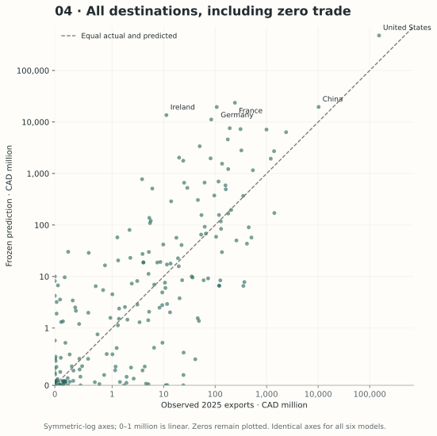
Top-five predicted HS4 products in each predicted destination
Destination and within-destination HS4 ranks were frozen in Phase A. Values are CAD million. Labels use exact-code CBSA T2026-2 heading text where available; later wording vintage is disclosed, and no tariff rule is inferred. BACI child fallbacks are labelled in the downloadable CSV. Actual 2025 product values were joined only afterward.
| HS4 rank | HS4 | Product heading | Predicted CAD m | Actual CAD m | Absolute error CAD m |
|---|---|---|---|---|---|
| 1 | 3004 | Medicaments (excluding goods of heading 30.02, 30.05 or 30.06) consisting of mixed or unmixed products for therapeutic or prophylactic uses, put up in measured doses (including those in the form of transdermal administration systems) or in forms or packings for retail sale. | 6,755 | 1 | 6,755 |
| 2 | 8411 | Turbo-jets, turbo-propellers and other gas turbines. | 6,742 | 362 | 6,380 |
| 3 | 8802 | Other aircraft (for example, helicopters, aeroplanes), except unmanned aircraft of heading 88.06; spacecraft (including satellites) and suborbital and spacecraft launch vehicles. | 6,639 | 25 | 6,614 |
| 4 | 8471 | Automatic data processing machines and units thereof; magnetic or optical readers, machines for transcribing data onto data media in coded form and machines for processing such data, not elsewhere specified or included. | 5,839 | 24 | 5,815 |
| 5 | 8703 | Motor cars and other motor vehicles principally designed for the transport of persons (other than those of heading 87.02), including station wagons and racing cars. | 5,606 | 10 | 5,596 |
| HS4 rank | HS4 | Product heading | Predicted CAD m | Actual CAD m | Absolute error CAD m |
|---|---|---|---|---|---|
| 1 | 3004 | Medicaments (excluding goods of heading 30.02, 30.05 or 30.06) consisting of mixed or unmixed products for therapeutic or prophylactic uses, put up in measured doses (including those in the form of transdermal administration systems) or in forms or packings for retail sale. | 2,182 | 0 | 2,182 |
| 2 | 8411 | Turbo-jets, turbo-propellers and other gas turbines. | 2,135 | 42 | 2,093 |
| 3 | 8703 | Motor cars and other motor vehicles principally designed for the transport of persons (other than those of heading 87.02), including station wagons and racing cars. | 778 | 0 | 778 |
| 4 | 7502 | Unwrought nickel. | 773 | 0 | 773 |
| 5 | 8802 | Other aircraft (for example, helicopters, aeroplanes), except unmanned aircraft of heading 88.06; spacecraft (including satellites) and suborbital and spacecraft launch vehicles. | 730 | 0 | 730 |
| HS4 rank | HS4 | Product heading | Predicted CAD m | Actual CAD m | Absolute error CAD m |
|---|---|---|---|---|---|
| 1 | 8411 | Turbo-jets, turbo-propellers and other gas turbines. | 2,132 | 0 | 2,132 |
| 2 | 7501 | Nickel mattes, nickel oxide sinters and other intermediate products of nickel metallurgy. | 1,708 | 0 | 1,708 |
| 3 | 3104 | Mineral or chemical fertilizers, potassic. | 987 | 0 | 987 |
| 4 | 2601 | Iron ores and concentrates, including roasted iron pyrites. | 937 | 0 | 937 |
| 5 | 3004 | Medicaments (excluding goods of heading 30.02, 30.05 or 30.06) consisting of mixed or unmixed products for therapeutic or prophylactic uses, put up in measured doses (including those in the form of transdermal administration systems) or in forms or packings for retail sale. | 854 | 0 | 854 |
| HS4 rank | HS4 | Product heading | Predicted CAD m | Actual CAD m | Absolute error CAD m |
|---|---|---|---|---|---|
| 1 | 8411 | Turbo-jets, turbo-propellers and other gas turbines. | 2,559 | 1 | 2,558 |
| 2 | 3004 | Medicaments (excluding goods of heading 30.02, 30.05 or 30.06) consisting of mixed or unmixed products for therapeutic or prophylactic uses, put up in measured doses (including those in the form of transdermal administration systems) or in forms or packings for retail sale. | 1,597 | 0 | 1,597 |
| 3 | 8802 | Other aircraft (for example, helicopters, aeroplanes), except unmanned aircraft of heading 88.06; spacecraft (including satellites) and suborbital and spacecraft launch vehicles. | 788 | 0 | 788 |
| 4 | 8703 | Motor cars and other motor vehicles principally designed for the transport of persons (other than those of heading 87.02), including station wagons and racing cars. | 761 | 1 | 760 |
| 5 | 1201 | Soya beans, whether or not broken. | 567 | 0 | 567 |
| HS4 rank | HS4 | Product heading | Predicted CAD m | Actual CAD m | Absolute error CAD m |
|---|---|---|---|---|---|
| 1 | 8802 | Other aircraft (for example, helicopters, aeroplanes), except unmanned aircraft of heading 88.06; spacecraft (including satellites) and suborbital and spacecraft launch vehicles. | 1,183 | 0 | 1,183 |
| 2 | 8411 | Turbo-jets, turbo-propellers and other gas turbines. | 705 | 0 | 705 |
| 3 | 3004 | Medicaments (excluding goods of heading 30.02, 30.05 or 30.06) consisting of mixed or unmixed products for therapeutic or prophylactic uses, put up in measured doses (including those in the form of transdermal administration systems) or in forms or packings for retail sale. | 702 | 0 | 702 |
| 4 | 3104 | Mineral or chemical fertilizers, potassic. | 357 | 0 | 357 |
| 5 | 3002 | Human blood; animal blood prepared for therapeutic, prophylactic or diagnostic uses; antisera, other blood fractions and immunological products, whether or not modified or obtained by means of biotechnological processes; vaccines, toxins, cultures of micro-organisms (excluding yeasts) and similar products; cell cultures, whether or not modified. | 338 | 0 | 338 |
| HS4 rank | HS4 | Product heading | Predicted CAD m | Actual CAD m | Absolute error CAD m |
|---|---|---|---|---|---|
| 1 | 3004 | Medicaments (excluding goods of heading 30.02, 30.05 or 30.06) consisting of mixed or unmixed products for therapeutic or prophylactic uses, put up in measured doses (including those in the form of transdermal administration systems) or in forms or packings for retail sale. | 2,060 | 0 | 2,060 |
| 2 | 7108 | Gold (including gold plated with platinum) unwrought or in semi-manufactured forms, or in powder form. | 1,062 | 0 | 1,062 |
| 3 | 8411 | Turbo-jets, turbo-propellers and other gas turbines. | 897 | 57 | 840 |
| 4 | 3002 | Human blood; animal blood prepared for therapeutic, prophylactic or diagnostic uses; antisera, other blood fractions and immunological products, whether or not modified or obtained by means of biotechnological processes; vaccines, toxins, cultures of micro-organisms (excluding yeasts) and similar products; cell cultures, whether or not modified. | 525 | 0 | 525 |
| 5 | 8802 | Other aircraft (for example, helicopters, aeroplanes), except unmanned aircraft of heading 88.06; spacecraft (including satellites) and suborbital and spacecraft launch vehicles. | 503 | 0 | 503 |
| HS4 rank | HS4 | Product heading | Predicted CAD m | Actual CAD m | Absolute error CAD m |
|---|---|---|---|---|---|
| 1 | 3004 | Medicaments (excluding goods of heading 30.02, 30.05 or 30.06) consisting of mixed or unmixed products for therapeutic or prophylactic uses, put up in measured doses (including those in the form of transdermal administration systems) or in forms or packings for retail sale. | 1,238 | 0 | 1,238 |
| 2 | 8411 | Turbo-jets, turbo-propellers and other gas turbines. | 951 | 6 | 945 |
| 3 | 7501 | Nickel mattes, nickel oxide sinters and other intermediate products of nickel metallurgy. | 438 | 0 | 438 |
| 4 | 7108 | Gold (including gold plated with platinum) unwrought or in semi-manufactured forms, or in powder form. | 395 | 0 | 395 |
| 5 | 8703 | Motor cars and other motor vehicles principally designed for the transport of persons (other than those of heading 87.02), including station wagons and racing cars. | 267 | 0 | 267 |
| HS4 rank | HS4 | Product heading | Predicted CAD m | Actual CAD m | Absolute error CAD m |
|---|---|---|---|---|---|
| 1 | 3004 | Medicaments (excluding goods of heading 30.02, 30.05 or 30.06) consisting of mixed or unmixed products for therapeutic or prophylactic uses, put up in measured doses (including those in the form of transdermal administration systems) or in forms or packings for retail sale. | 966 | 0 | 966 |
| 2 | 8411 | Turbo-jets, turbo-propellers and other gas turbines. | 924 | 42 | 882 |
| 3 | 8703 | Motor cars and other motor vehicles principally designed for the transport of persons (other than those of heading 87.02), including station wagons and racing cars. | 240 | 0 | 240 |
| 4 | 8802 | Other aircraft (for example, helicopters, aeroplanes), except unmanned aircraft of heading 88.06; spacecraft (including satellites) and suborbital and spacecraft launch vehicles. | 208 | 0 | 208 |
| 5 | 7502 | Unwrought nickel. | 188 | 0 | 188 |
| HS4 rank | HS4 | Product heading | Predicted CAD m | Actual CAD m | Absolute error CAD m |
|---|---|---|---|---|---|
| 1 | 8411 | Turbo-jets, turbo-propellers and other gas turbines. | 728 | 0 | 728 |
| 2 | 3004 | Medicaments (excluding goods of heading 30.02, 30.05 or 30.06) consisting of mixed or unmixed products for therapeutic or prophylactic uses, put up in measured doses (including those in the form of transdermal administration systems) or in forms or packings for retail sale. | 307 | 0 | 307 |
| 3 | 8479 | Machines and mechanical appliances having individual functions, not specified or included elsewhere in this Chapter. | 233 | 14 | 219 |
| 4 | 8477 | Machinery for working rubber or plastics or for the manufacture of products from these materials, not specified or included elsewhere in this Chapter. | 216 | 0 | 216 |
| 5 | 3104 | Mineral or chemical fertilizers, potassic. | 190 | 0 | 190 |
| HS4 rank | HS4 | Product heading | Predicted CAD m | Actual CAD m | Absolute error CAD m |
|---|---|---|---|---|---|
| 1 | 8411 | Turbo-jets, turbo-propellers and other gas turbines. | 833 | 0 | 833 |
| 2 | 3004 | Medicaments (excluding goods of heading 30.02, 30.05 or 30.06) consisting of mixed or unmixed products for therapeutic or prophylactic uses, put up in measured doses (including those in the form of transdermal administration systems) or in forms or packings for retail sale. | 725 | 0 | 725 |
| 3 | 7501 | Nickel mattes, nickel oxide sinters and other intermediate products of nickel metallurgy. | 429 | 0 | 429 |
| 4 | 8802 | Other aircraft (for example, helicopters, aeroplanes), except unmanned aircraft of heading 88.06; spacecraft (including satellites) and suborbital and spacecraft launch vehicles. | 376 | 0 | 376 |
| 5 | 2601 | Iron ores and concentrates, including roasted iron pyrites. | 325 | 0 | 325 |
Diagnostics and interpretation
The final network has 4,129 parameters, completed 94 epochs, and its best random-cell internal validation R² is 0.727. That internal score is not the exporter-held-out score above. Training log RMSE 3.153, aggregate calibration 2.168. Final scoring log predictions range from -15.270 to 21.545; largest training log target 25.333. Convergence/early-stopping records for all folds are retained in fit records.
Where the model over- and underpredicts

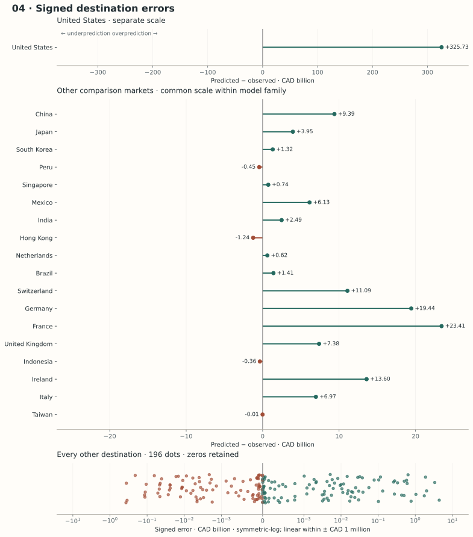
Predictive and structural critique
Predictive limitations. Standardization, learning rate, initialization and early stopping alter the fitted surface. The network may overfit correlated cells or produce extreme extrapolations, amplified by exponentiation. Medium-sized economic tables do not give a neural network the repeated spatial structure that makes deep image models successful; strong trees may fit thresholds more efficiently.
Structural and statistical limitations. Hidden activations do not identify economic mechanisms. The same exporter variables repeat across thousands of products; nominal sample size exaggerates independent socioeconomic information. Optimization finds a local solution, and no causal, capacity or equilibrium constraints are imposed. The model has no temporal equation and national proxies remain imperfect.
What this model teaches us
A different mathematical architecture does not supply missing provincial information. A network’s flexibility can improve or worsen predictions while making the reasons harder to inspect; scaling and optimization are part of the model, not incidental housekeeping.
05Single-stage gradient boostingStructural
Key Equation
Dataset Size
46,456 2024 cells fit the boosted trees; 5,162 cells are reserved for automatic early stopping (10%). 51,618 zero-filled 2024 cells enter the final fitting pipeline (42,268 positive and 9,350 zero-valued cells). Preprocessing and dollar calibration use all input cells. Each cell is one exporter–destination–HS4 product observation across 42 directed foreign-country pairs and 1,229 headings. Domestic/self-pairs and products outside the fixed HS2022 universe are excluded; valid absent flows are retained as zeros. Missing explanatory variables are median-imputed rather than causing row deletion. Alberta 2025 outcomes are excluded. Exporter-held-out validation uses 7,374 test cells per fold, separate from the 44,244 cells supplied to each fold’s fit.
Key Assumption
Relationships learned from the 2024 cross-section are assumed to provide useful Alberta trade potential without specifying next-year adjustment.
Actual versus predicted Alberta destination exports

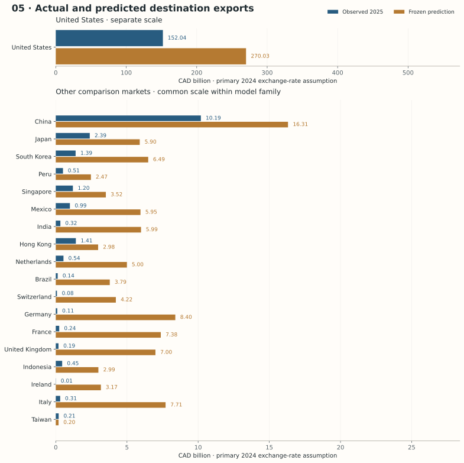
2025 Alberta outcomes below are an external diagnostic, meaning that previously frozen predictions are compared with observed Alberta exports that were not used to fit or select the model. This model produces structural model-implied trade potential based on 2024 information, rather than an explicitly dynamic one-year forecast. Missing explanatory variables are replaced with medians estimated from this model’s training sample; these estimated inputs are not directly observed values.
Intuition and relevance to Alberta
Single-stage boosting sequentially corrects mistakes in the predicted log1p trade surface. It can capture a supply–demand interaction or nonlinear distance response with small trees. This section isolates the flexible structural estimator before adding Model 6’s extensive/intensive separation and time adjustment.
Target, notation and mathematics
For squared log-scale error, pseudo-residuals are the current prediction errors. Later trees correct patterns left by earlier ones. Histogram boosting bins continuous values internally and uses gradients and Hessians for efficient splits and leaf updates. A forest averages largely independent randomized trees; boosting builds a dependent sequence of corrective trees.
Data, preprocessing and fitting
One HistGradientBoostingRegressor fits log(1 + V) on every zero-filled 2024 cell. There is no positive-trade classifier, positive-only regressor, λ, or Alberta lag blending. Settings match the structural Model 6 tree budget: max_iter 150, max_leaf_nodes 7, learning_rate 0.05, seed 338. Automatic early stopping retains scikit-learn defaults; actual final iterations: 150. The preprocessing and dollar calibration are training-only.
Validation logic
Leave one exporter out of 2024. Tree settings are predeclared. Automatic stopping uses a random cell subset of the six training exporters; this can look optimistic when country/product patterns repeat, although the outer test exporter remains excluded. The internal experiment is cross-sectional transfer.
Internal validation results
WAPE = Weighted Absolute Percentage Error; MAE = Mean Absolute Error; RMSLE = Root Mean Squared Logarithmic Error.
| Held-out exporter | Cell WAPE | Cell MAE USD m | RMSLE | Destination WAPE | Spearman | Top-three overlap |
|---|---|---|---|---|---|---|
| CAN | 90.6% | 60.4 | 4.2 | 68.2% | 0.49 | 2/3 |
| CHN | 140.1% | 193.2 | 4.0 | 79.7% | 0.60 | 3/3 |
| JPN | 81.5% | 38.4 | 3.9 | 49.2% | 0.66 | 3/3 |
| KOR | 94.7% | 42.4 | 3.9 | 58.8% | 0.77 | 3/3 |
| MEX | 90.5% | 68.8 | 5.3 | 59.2% | 0.77 | 3/3 |
| GBR | 182.5% | 26.7 | 4.4 | 135.1% | 1.00 | 3/3 |
| USA | 80.4% | 100.3 | 2.5 | 43.7% | 0.71 | 3/3 |
Equal-exporter mean destination WAPE: 70.55%. Only six destinations exist per training exporter, so the internal overlap diagnostic uses top three; top ten would be uninformative. Cell metrics use USD; external diagnostics use CAD. Internal and external experiments are not interchangeable.
Alberta scoring assumptions
Alberta is a separate scoring entity. Canadian 2024 GDP, population, manufacturing share (imputed where absent), internet share, Canada-to-destination distance/border/language and external Canadian HS4 supply are Canadian proxies; they are not Alberta measurements. Destination demand and outside-network demand use 2024 BACI. Only Models 1 and 6 use Alberta’s actual 2024 destination–HS4 lag. All six use the same pre-2025 structural grid and identical disclosed persistence fallback. No 2025 destination or product outcome selected these lists.
Frozen 2025 predictions and external comparison
- Primary prediction
- CAD 591.8 bn
- Destination WAPE
- 232.64%
- Spearman
- 0.780
- Top ten overlap
- 5/10
Observed total: CAD 178.0 bn. External HS4-cell MAE: CAD 3 m; cell WAPE: 403.53%; RMSLE: 7.972. Mean absolute error over the frozen predicted top ten: CAD 17.3 bn; median: CAD 6.5 bn. Destination WAPE aggregates products before measuring error; cell WAPE can be higher because product errors cancel in totals.
| Predicted rank | Destination | Predicted CAD bn | Actual CAD bn | Signed error CAD bn | Absolute error CAD bn | Relative error |
|---|---|---|---|---|---|---|
| 1 | United States | 270.0 | 152.0 | +118.0 | 118.0 | +77.6% |
| 2 | China | 16.3 | 10.2 | +6.1 | 6.1 | +60.0% |
| 3 | Germany | 8.4 | 0.1 | +8.3 | 8.3 | +7705.9% |
| 4 | Italy | 7.7 | 0.3 | +7.4 | 7.4 | +2380.4% |
| 5 | France | 7.4 | 0.2 | +7.1 | 7.1 | +2947.3% |
| 6 | United Kingdom | 7.0 | 0.2 | +6.8 | 6.8 | +3544.1% |
| 7 | South Korea | 6.5 | 1.4 | +5.1 | 5.1 | +366.0% |
| 8 | India | 6.0 | 0.3 | +5.7 | 5.7 | +1752.3% |
| 9 | Mexico | 6.0 | 1.0 | +5.0 | 5.0 | +499.5% |
| 10 | Japan | 5.9 | 2.4 | +3.5 | 3.5 | +147.1% |
How values align across all destinations

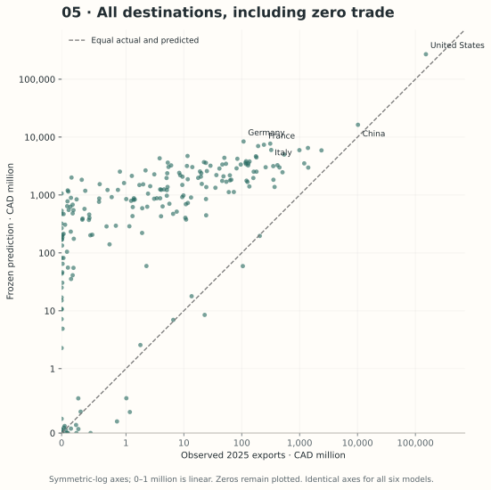
Top-five predicted HS4 products in each predicted destination
Destination and within-destination HS4 ranks were frozen in Phase A. Values are CAD million. Labels use exact-code CBSA T2026-2 heading text where available; later wording vintage is disclosed, and no tariff rule is inferred. BACI child fallbacks are labelled in the downloadable CSV. Actual 2025 product values were joined only afterward.
| HS4 rank | HS4 | Product heading | Predicted CAD m | Actual CAD m | Absolute error CAD m |
|---|---|---|---|---|---|
| 1 | 7108 | Gold (including gold plated with platinum) unwrought or in semi-manufactured forms, or in powder form. | 4,873 | 8 | 4,865 |
| 2 | 8411 | Turbo-jets, turbo-propellers and other gas turbines. | 3,392 | 362 | 3,030 |
| 3 | 8802 | Other aircraft (for example, helicopters, aeroplanes), except unmanned aircraft of heading 88.06; spacecraft (including satellites) and suborbital and spacecraft launch vehicles. | 3,258 | 25 | 3,233 |
| 4 | 3004 | Medicaments (excluding goods of heading 30.02, 30.05 or 30.06) consisting of mixed or unmixed products for therapeutic or prophylactic uses, put up in measured doses (including those in the form of transdermal administration systems) or in forms or packings for retail sale. | 2,900 | 1 | 2,899 |
| 5 | 7102 | Diamonds, whether or not worked, but not mounted or set. | 2,523 | 1 | 2,522 |
| HS4 rank | HS4 | Product heading | Predicted CAD m | Actual CAD m | Absolute error CAD m |
|---|---|---|---|---|---|
| 1 | 7108 | Gold (including gold plated with platinum) unwrought or in semi-manufactured forms, or in powder form. | 1,390 | 0 | 1,390 |
| 2 | 8802 | Other aircraft (for example, helicopters, aeroplanes), except unmanned aircraft of heading 88.06; spacecraft (including satellites) and suborbital and spacecraft launch vehicles. | 915 | 0 | 915 |
| 3 | 8411 | Turbo-jets, turbo-propellers and other gas turbines. | 841 | 0 | 841 |
| 4 | 1001 | Wheat and meslin. | 791 | 355 | 436 |
| 5 | 3004 | Medicaments (excluding goods of heading 30.02, 30.05 or 30.06) consisting of mixed or unmixed products for therapeutic or prophylactic uses, put up in measured doses (including those in the form of transdermal administration systems) or in forms or packings for retail sale. | 721 | 0 | 721 |
| HS4 rank | HS4 | Product heading | Predicted CAD m | Actual CAD m | Absolute error CAD m |
|---|---|---|---|---|---|
| 1 | 7108 | Gold (including gold plated with platinum) unwrought or in semi-manufactured forms, or in powder form. | 720 | 0 | 720 |
| 2 | 8802 | Other aircraft (for example, helicopters, aeroplanes), except unmanned aircraft of heading 88.06; spacecraft (including satellites) and suborbital and spacecraft launch vehicles. | 474 | 0 | 474 |
| 3 | 8411 | Turbo-jets, turbo-propellers and other gas turbines. | 454 | 1 | 454 |
| 4 | 1001 | Wheat and meslin. | 409 | 0 | 409 |
| 5 | 3004 | Medicaments (excluding goods of heading 30.02, 30.05 or 30.06) consisting of mixed or unmixed products for therapeutic or prophylactic uses, put up in measured doses (including those in the form of transdermal administration systems) or in forms or packings for retail sale. | 372 | 0 | 372 |
| HS4 rank | HS4 | Product heading | Predicted CAD m | Actual CAD m | Absolute error CAD m |
|---|---|---|---|---|---|
| 1 | 7108 | Gold (including gold plated with platinum) unwrought or in semi-manufactured forms, or in powder form. | 720 | 0 | 720 |
| 2 | 8802 | Other aircraft (for example, helicopters, aeroplanes), except unmanned aircraft of heading 88.06; spacecraft (including satellites) and suborbital and spacecraft launch vehicles. | 474 | 0 | 474 |
| 3 | 8411 | Turbo-jets, turbo-propellers and other gas turbines. | 454 | 42 | 412 |
| 4 | 1001 | Wheat and meslin. | 409 | 156 | 254 |
| 5 | 3004 | Medicaments (excluding goods of heading 30.02, 30.05 or 30.06) consisting of mixed or unmixed products for therapeutic or prophylactic uses, put up in measured doses (including those in the form of transdermal administration systems) or in forms or packings for retail sale. | 372 | 0 | 372 |
| HS4 rank | HS4 | Product heading | Predicted CAD m | Actual CAD m | Absolute error CAD m |
|---|---|---|---|---|---|
| 1 | 7108 | Gold (including gold plated with platinum) unwrought or in semi-manufactured forms, or in powder form. | 676 | 0 | 676 |
| 2 | 8802 | Other aircraft (for example, helicopters, aeroplanes), except unmanned aircraft of heading 88.06; spacecraft (including satellites) and suborbital and spacecraft launch vehicles. | 445 | 0 | 445 |
| 3 | 8411 | Turbo-jets, turbo-propellers and other gas turbines. | 427 | 42 | 385 |
| 4 | 3004 | Medicaments (excluding goods of heading 30.02, 30.05 or 30.06) consisting of mixed or unmixed products for therapeutic or prophylactic uses, put up in measured doses (including those in the form of transdermal administration systems) or in forms or packings for retail sale. | 350 | 0 | 350 |
| 5 | 7102 | Diamonds, whether or not worked, but not mounted or set. | 258 | 0 | 258 |
| HS4 rank | HS4 | Product heading | Predicted CAD m | Actual CAD m | Absolute error CAD m |
|---|---|---|---|---|---|
| 1 | 7108 | Gold (including gold plated with platinum) unwrought or in semi-manufactured forms, or in powder form. | 669 | 0 | 669 |
| 2 | 8802 | Other aircraft (for example, helicopters, aeroplanes), except unmanned aircraft of heading 88.06; spacecraft (including satellites) and suborbital and spacecraft launch vehicles. | 440 | 5 | 435 |
| 3 | 8411 | Turbo-jets, turbo-propellers and other gas turbines. | 422 | 6 | 416 |
| 4 | 3004 | Medicaments (excluding goods of heading 30.02, 30.05 or 30.06) consisting of mixed or unmixed products for therapeutic or prophylactic uses, put up in measured doses (including those in the form of transdermal administration systems) or in forms or packings for retail sale. | 346 | 0 | 346 |
| 5 | 1001 | Wheat and meslin. | 282 | 76 | 206 |
| HS4 rank | HS4 | Product heading | Predicted CAD m | Actual CAD m | Absolute error CAD m |
|---|---|---|---|---|---|
| 1 | 7108 | Gold (including gold plated with platinum) unwrought or in semi-manufactured forms, or in powder form. | 700 | 0 | 700 |
| 2 | 8802 | Other aircraft (for example, helicopters, aeroplanes), except unmanned aircraft of heading 88.06; spacecraft (including satellites) and suborbital and spacecraft launch vehicles. | 461 | 0 | 461 |
| 3 | 8411 | Turbo-jets, turbo-propellers and other gas turbines. | 424 | 0 | 424 |
| 4 | 3004 | Medicaments (excluding goods of heading 30.02, 30.05 or 30.06) consisting of mixed or unmixed products for therapeutic or prophylactic uses, put up in measured doses (including those in the form of transdermal administration systems) or in forms or packings for retail sale. | 363 | 0 | 363 |
| 5 | 1001 | Wheat and meslin. | 295 | 21 | 274 |
| HS4 rank | HS4 | Product heading | Predicted CAD m | Actual CAD m | Absolute error CAD m |
|---|---|---|---|---|---|
| 1 | 7108 | Gold (including gold plated with platinum) unwrought or in semi-manufactured forms, or in powder form. | 667 | 0 | 667 |
| 2 | 8802 | Other aircraft (for example, helicopters, aeroplanes), except unmanned aircraft of heading 88.06; spacecraft (including satellites) and suborbital and spacecraft launch vehicles. | 439 | 0 | 439 |
| 3 | 8411 | Turbo-jets, turbo-propellers and other gas turbines. | 421 | 2 | 420 |
| 4 | 7102 | Diamonds, whether or not worked, but not mounted or set. | 301 | 0 | 301 |
| 5 | 3004 | Medicaments (excluding goods of heading 30.02, 30.05 or 30.06) consisting of mixed or unmixed products for therapeutic or prophylactic uses, put up in measured doses (including those in the form of transdermal administration systems) or in forms or packings for retail sale. | 275 | 0 | 275 |
| HS4 rank | HS4 | Product heading | Predicted CAD m | Actual CAD m | Absolute error CAD m |
|---|---|---|---|---|---|
| 1 | 3004 | Medicaments (excluding goods of heading 30.02, 30.05 or 30.06) consisting of mixed or unmixed products for therapeutic or prophylactic uses, put up in measured doses (including those in the form of transdermal administration systems) or in forms or packings for retail sale. | 447 | 0 | 447 |
| 2 | 8802 | Other aircraft (for example, helicopters, aeroplanes), except unmanned aircraft of heading 88.06; spacecraft (including satellites) and suborbital and spacecraft launch vehicles. | 408 | 0 | 408 |
| 3 | 8411 | Turbo-jets, turbo-propellers and other gas turbines. | 404 | 0 | 404 |
| 4 | 8703 | Motor cars and other motor vehicles principally designed for the transport of persons (other than those of heading 87.02), including station wagons and racing cars. | 290 | 0 | 290 |
| 5 | 1201 | Soya beans, whether or not broken. | 225 | 0 | 225 |
| HS4 rank | HS4 | Product heading | Predicted CAD m | Actual CAD m | Absolute error CAD m |
|---|---|---|---|---|---|
| 1 | 8802 | Other aircraft (for example, helicopters, aeroplanes), except unmanned aircraft of heading 88.06; spacecraft (including satellites) and suborbital and spacecraft launch vehicles. | 430 | 0 | 430 |
| 2 | 8411 | Turbo-jets, turbo-propellers and other gas turbines. | 413 | 0 | 413 |
| 3 | 7108 | Gold (including gold plated with platinum) unwrought or in semi-manufactured forms, or in powder form. | 413 | 0 | 413 |
| 4 | 3004 | Medicaments (excluding goods of heading 30.02, 30.05 or 30.06) consisting of mixed or unmixed products for therapeutic or prophylactic uses, put up in measured doses (including those in the form of transdermal administration systems) or in forms or packings for retail sale. | 339 | 0 | 339 |
| 5 | 1001 | Wheat and meslin. | 261 | 231 | 30 |
Diagnostics and interpretation
Final training log RMSE 3.524; training-only dollar calibration 4.901. The same tree size and shrinkage do not make this estimator equivalent to Model 6: fitting log1p over zeros and positives defines a different loss and structural signal.
Where the model over- and underpredicts

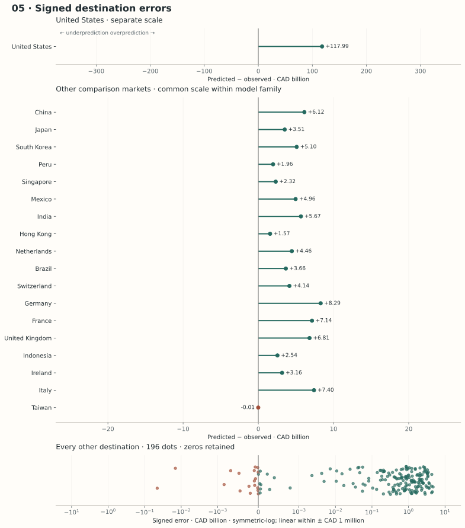
Predictive and structural critique
Predictive limitations. Learning rate, leaf count and stopping jointly constrain complexity; small corrective trees can still fit repeated cross-sectional patterns. Zero trade and positive flow magnitudes compete within one squared-error response mechanism. Poor outside-network support and large petroleum dollar errors remain possible.
Structural and statistical limitations. Its output is 2025 model-implied trade potential based on 2024 information, not a fully identified one-year forecast. No mechanism says how quickly Alberta could move toward that signal. Canadian supply and GDP represent national capability. Boosting’s flexibility does not distinguish feasible opportunity from statistical resemblance. This unresolved structural-to-dynamic step motivates Model 6.
What this model teaches us
Improving the shape of a cross-sectional prediction does not supply a clock. A flexible structural estimator can produce credible-looking rankings while having no identified rule that turns 2024 fundamentals into next-year realized exports.
06Dynamic two-stage boosted partial adjustmentDynamic
Key Equation
Dataset Size
Classification stage: 51,618 zero-filled 2024 cells enter the pipeline; 46,456 fit the classifier and 5,162 are reserved for automatic early stopping. Conditional-positive-value stage: 42,268 positive 2024 cells enter its separate pipeline; 38,041 fit the regressor and 4,227 are reserved for automatic early stopping. The 9,350 zero-valued cells are excluded only from the positive-value stage. Stage-specific preprocessing uses the full input sample for that stage; positive-dollar calibration uses all 42,268 positive cells. Adjustment stage: λ is estimated on 51,618 matched 2022→2023 transitions using exporter-out-of-fold structural signals, with zeros retained. The separate 2023→2024 temporal validation covers 51,618 cells (7,374 per exporter) and does not refit λ. Each cell is one exporter–destination–HS4 product observation across 42 directed foreign-country pairs and 1,229 headings. Domestic/self-pairs and products outside the fixed HS2022 universe are excluded; valid absent flows are retained as zeros. Missing explanatory variables are median-imputed rather than causing row deletion. Alberta 2025 outcomes are excluded.
Key Assumption
A common estimated adjustment rate is assumed to approximate Alberta's movement from observed bilateral HS4 trade toward model-implied structural potential.
Actual versus predicted Alberta destination exports

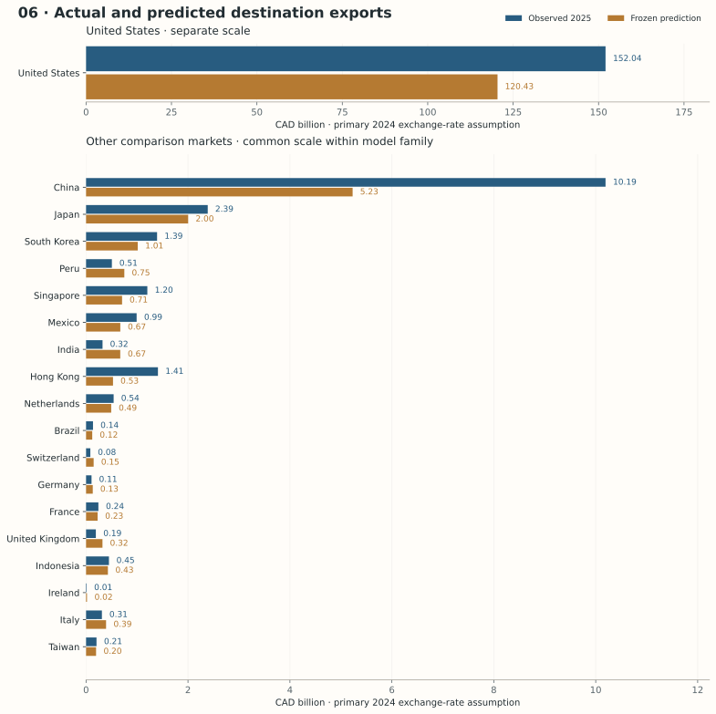
2025 Alberta outcomes below are an external diagnostic, meaning that previously frozen predictions are compared with observed Alberta exports that were not used to fit or select the model. This model produces an imputation-qualified one-year partial-adjustment prediction, meaning that missing explanatory variables were replaced with estimated values rather than directly observed data; the classification and conditional-positive-value stages use separate medians estimated from their respective training samples.
Intuition and relevance to Alberta
Trade has an entry question and a size question. Model 6 first estimates whether a bilateral HS4 flow is positive and its size conditional on being positive. It then moves only partway from Alberta’s observed 2024 relationship toward that structural signal. The observed lag preserves information about contracts and infrastructure that GDP, distance and external supply cannot fully recover.
Target, notation and mathematics
Extensive margin: HistGradientBoostingClassifier on the entire grid, binary log-loss. Its probability concerns positive current-year trade conditional on the features. It is not a destination-rank probability, a commercial-success probability or feasibility certification.
Intensive margin: HistGradientBoostingRegressor on positive flows only. This log(V) target differs from the log(1 + V) used in the dynamic equation and all single-stage models. Separate fitted preprocessing pipelines respect the different training subsets.
Exponentiating a conditional log mean is not an arithmetic conditional mean. Aggregate calibration matches positive training dollars; it is not an exact conditional smearing correction. Multiplying by π gives the structural expected-trade signal V*. It is not yet Alberta’s next-year forecast.
This is geometric adjustment in gross trade levels, not a dollar-weighted average. λ = 0 leaves the USD state unchanged; λ = 1 closes the full log gap in one year; intermediate λ preserves persistence while moving partway. The final inverse-log dynamic plug-in remains distinct from an unbiased conditional-mean forecast.
For illustration, a zero lag and a USD 10 million structural signal imply only about USD 7.72 after one year at the fitted λ. Log-space adjustment therefore attenuates new cells sharply; it does not identify whether entry is commercially feasible. The “+1” makes near-zero behaviour sensitive to monetary units, so the implementation keeps USD dollars consistently rather than switching to thousands midway.
Data, preprocessing and fitting
Both stages reproduce the supplied PDF and supporting script: max_iter 150, max_leaf_nodes 7, learning_rate 0.05, random_state 338, default automatic early stopping. Each stage uses numeric median imputation and standardization plus HS2 one-hot encoding. Training-only positive-dollar calibration is estimated anew in every fold. Legal variables and Alberta 2025 outcomes are excluded.
Estimate λ without an intercept using 2022 exporter-out-of-fold potential and actual 2022/2023. The theoretical [0,1] restriction follows the source’s clipping rule; it is never selected using later errors. Changing the structural estimator changes the gap, so an older estimator’s λ cannot be reused.
Validation logic
- 2022→2023: exclude each exporter from both stages, preprocessing and calibration; estimate λ from its OOF gap and actual log change.
- 2023→2024: freeze λ, independently repeat 2023 exporter OOF fitting, combine potential with actual 2023, save predictions, then join actual 2024 solely for validation.
- 2024→Alberta 2025: fit final 2024 stages, score the frozen universe with Canadian proxies, combine with Alberta’s actual 2024 lag.
- 2025: open Alberta outcomes only after all six models, destination ranks and HS4 ranks are frozen. This is an external diagnostic.
Internal validation results
WAPE = Weighted Absolute Percentage Error; MAE = Mean Absolute Error; RMSLE = Root Mean Squared Logarithmic Error.
| Held-out exporter | Cell WAPE | Cell MAE USD m | RMSLE | Destination WAPE | Spearman | Top-three overlap |
|---|---|---|---|---|---|---|
| CAN | 30.4% | 20.3 | 2.9 | 24.2% | 0.94 | 3/3 |
| CHN | 20.0% | 27.6 | 1.8 | 9.6% | 0.94 | 3/3 |
| JPN | 21.1% | 9.9 | 2.4 | 8.3% | 0.83 | 3/3 |
| KOR | 29.5% | 13.2 | 2.5 | 17.8% | 1.00 | 3/3 |
| MEX | 28.7% | 21.8 | 2.9 | 22.6% | 1.00 | 3/3 |
| GBR | 37.6% | 5.5 | 2.7 | 17.3% | 1.00 | 3/3 |
| USA | 22.0% | 27.4 | 1.7 | 10.3% | 0.77 | 3/3 |
Equal-exporter mean destination WAPE: 15.74%. Only six destinations exist per training exporter, so the internal overlap diagnostic uses top three; top ten would be uninformative. Cell metrics use USD; external diagnostics use CAD. Internal and external experiments are not interchangeable.
Final classifier iterations: 150; positive-value regressor iterations: 150; positive-dollar calibration: 3.3610.
Alberta scoring assumptions
Alberta is a separate scoring entity. Canadian 2024 GDP, population, manufacturing share (imputed where absent), internet share, Canada-to-destination distance/border/language and external Canadian HS4 supply are Canadian proxies; they are not Alberta measurements. Destination demand and outside-network demand use 2024 BACI. Only Models 1 and 6 use Alberta’s actual 2024 destination–HS4 lag. All six use the same pre-2025 structural grid and identical disclosed persistence fallback. No 2025 destination or product outcome selected these lists.
Frozen 2025 predictions and external comparison
- Primary prediction
- CAD 140.0 bn
- Destination WAPE
- 23.49%
- Spearman
- 0.933
- Top ten overlap
- 9/10
Observed total: CAD 178.0 bn. External HS4-cell MAE: CAD 0 m; cell WAPE: 33.97%; RMSLE: 2.103. Mean absolute error over the frozen predicted top ten: CAD 4.0 bn; median: CAD 0.4 bn. Destination WAPE aggregates products before measuring error; cell WAPE can be higher because product errors cancel in totals.
| Predicted rank | Destination | Predicted CAD bn | Actual CAD bn | Signed error CAD bn | Absolute error CAD bn | Relative error |
|---|---|---|---|---|---|---|
| 1 | United States | 120.4 | 152.0 | -31.6 | 31.6 | -20.8% |
| 2 | China | 5.2 | 10.2 | -5.0 | 5.0 | -48.7% |
| 3 | Japan | 2.0 | 2.4 | -0.4 | 0.4 | -16.1% |
| 4 | South Korea | 1.0 | 1.4 | -0.4 | 0.4 | -27.2% |
| 5 | Peru | 0.8 | 0.5 | +0.2 | 0.2 | +48.2% |
| 6 | Singapore | 0.7 | 1.2 | -0.5 | 0.5 | -41.2% |
| 7 | Mexico | 0.7 | 1.0 | -0.3 | 0.3 | -32.3% |
| 8 | India | 0.7 | 0.3 | +0.3 | 0.3 | +107.5% |
| 9 | Hong Kong | 0.5 | 1.4 | -0.9 | 0.9 | -62.5% |
| 10 | Netherlands | 0.5 | 0.5 | -0.0 | 0.0 | -8.8% |
How values align across all destinations

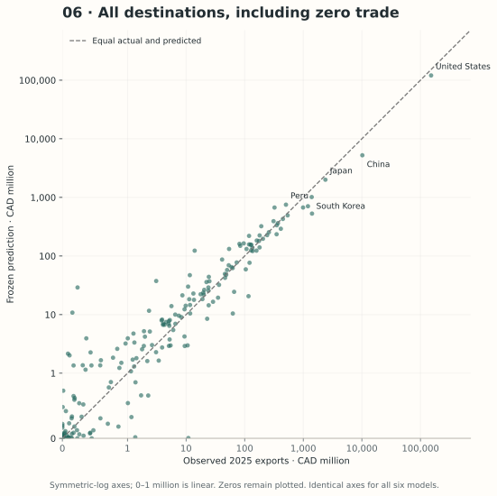
Top-five predicted HS4 products in each predicted destination
Destination and within-destination HS4 ranks were frozen in Phase A. Values are CAD million. Labels use exact-code CBSA T2026-2 heading text where available; later wording vintage is disclosed, and no tariff rule is inferred. BACI child fallbacks are labelled in the downloadable CSV. Actual 2025 product values were joined only afterward.
| HS4 rank | HS4 | Product heading | Predicted CAD m | Actual CAD m | Absolute error CAD m |
|---|---|---|---|---|---|
| 1 | 2709 | Petroleum oils and oils obtained from bituminous minerals, crude.Note: The General Tariff rate that applies to goods of this tariff item is the Most-Favoured-Nation Tariff rate. | 82,946 | 110,822 | 27,875 |
| 2 | 2711 | Petroleum gases and other gaseous hydrocarbons. | 5,021 | 11,573 | 6,552 |
| 3 | 3901 | Polymers of ethylene, in primary forms. | 2,816 | 2,633 | 183 |
| 4 | 2710 | Petroleum oils and oils obtained from bituminous minerals, other than crude; preparations not elsewhere specified or included, containing by weight 70% or more of petroleum oils or of oils obtained from bituminous minerals, these oils being the basic constituents of the preparations; waste oils. | 2,676 | 2,129 | 546 |
| 5 | 0201 | Meat of bovine animals, fresh or chilled. | 2,293 | 2,845 | 552 |
| HS4 rank | HS4 | Product heading | Predicted CAD m | Actual CAD m | Absolute error CAD m |
|---|---|---|---|---|---|
| 1 | 2709 | Petroleum oils and oils obtained from bituminous minerals, crude.Note: The General Tariff rate that applies to goods of this tariff item is the Most-Favoured-Nation Tariff rate. | 1,890 | 6,320 | 4,429 |
| 2 | 1205 | Rape or colza seeds, whether or not broken. | 756 | 431 | 325 |
| 3 | 4703 | Chemical wood pulp, soda or sulphate, other than dissolving grades. | 358 | 437 | 79 |
| 4 | 3901 | Polymers of ethylene, in primary forms. | 322 | 589 | 267 |
| 5 | 1001 | Wheat and meslin. | 287 | 355 | 68 |
| HS4 rank | HS4 | Product heading | Predicted CAD m | Actual CAD m | Absolute error CAD m |
|---|---|---|---|---|---|
| 1 | 2701 | Coal; briquettes, ovoids and similar solid fuels manufactured from coal. | 442 | 345 | 97 |
| 2 | 1001 | Wheat and meslin. | 234 | 231 | 3 |
| 3 | 0203 | Meat of swine, fresh, chilled or frozen. | 230 | 362 | 132 |
| 4 | 2711 | Petroleum gases and other gaseous hydrocarbons. | 219 | 78 | 140 |
| 5 | 1205 | Rape or colza seeds, whether or not broken. | 172 | 364 | 192 |
| HS4 rank | HS4 | Product heading | Predicted CAD m | Actual CAD m | Absolute error CAD m |
|---|---|---|---|---|---|
| 1 | 2701 | Coal; briquettes, ovoids and similar solid fuels manufactured from coal. | 381 | 180 | 201 |
| 2 | 7502 | Unwrought nickel. | 83 | 125 | 42 |
| 3 | 2709 | Petroleum oils and oils obtained from bituminous minerals, crude.Note: The General Tariff rate that applies to goods of this tariff item is the Most-Favoured-Nation Tariff rate. | 77 | 400 | 323 |
| 4 | 0202 | Meat of bovine animals, frozen. | 77 | 91 | 14 |
| 5 | 0203 | Meat of swine, fresh, chilled or frozen. | 71 | 124 | 52 |
| HS4 rank | HS4 | Product heading | Predicted CAD m | Actual CAD m | Absolute error CAD m |
|---|---|---|---|---|---|
| 1 | 2710 | Petroleum oils and oils obtained from bituminous minerals, other than crude; preparations not elsewhere specified or included, containing by weight 70% or more of petroleum oils or of oils obtained from bituminous minerals, these oils being the basic constituents of the preparations; waste oils. | 550 | 286 | 264 |
| 2 | 1001 | Wheat and meslin. | 182 | 173 | 9 |
| 3 | 8807 | Parts of goods of heading 88.01, 88.02 or 88.06. | 2 | 2 | 0 |
| 4 | 1004 | Oats. | 2 | 2 | 1 |
| 5 | 3902 | Polymers of propylene or of other olefins, in primary forms. | 2 | 0 | 2 |
| HS4 rank | HS4 | Product heading | Predicted CAD m | Actual CAD m | Absolute error CAD m |
|---|---|---|---|---|---|
| 1 | 2709 | Petroleum oils and oils obtained from bituminous minerals, crude.Note: The General Tariff rate that applies to goods of this tariff item is the Most-Favoured-Nation Tariff rate. | 544 | 1,088 | 545 |
| 2 | 3901 | Polymers of ethylene, in primary forms. | 48 | 42 | 6 |
| 3 | 7502 | Unwrought nickel. | 28 | 13 | 15 |
| 4 | 8431 | Parts suitable for use solely or principally with the machinery of headings 84.25 to 84.30. | 24 | 17 | 6 |
| 5 | 8412 | Other engines and motors. | 9 | 5 | 4 |
| HS4 rank | HS4 | Product heading | Predicted CAD m | Actual CAD m | Absolute error CAD m |
|---|---|---|---|---|---|
| 1 | 0201 | Meat of bovine animals, fresh or chilled. | 115 | 232 | 117 |
| 2 | 1205 | Rape or colza seeds, whether or not broken. | 107 | 206 | 99 |
| 3 | 1001 | Wheat and meslin. | 69 | 79 | 10 |
| 4 | 3901 | Polymers of ethylene, in primary forms. | 61 | 59 | 2 |
| 5 | 0203 | Meat of swine, fresh, chilled or frozen. | 60 | 63 | 2 |
| HS4 rank | HS4 | Product heading | Predicted CAD m | Actual CAD m | Absolute error CAD m |
|---|---|---|---|---|---|
| 1 | 0713 | Dried leguminous vegetables, shelled, whether or not skinned or split. | 405 | 153 | 252 |
| 2 | 7502 | Unwrought nickel. | 91 | 48 | 43 |
| 3 | 2701 | Coal; briquettes, ovoids and similar solid fuels manufactured from coal. | 32 | 0 | 32 |
| 4 | 4705 | Wood pulp obtained by a combination of mechanical and chemical pulping processes. | 22 | 15 | 7 |
| 5 | 7204 | Ferrous waste and scrap; remelting scrap ingots of iron or steel. | 21 | 19 | 3 |
| HS4 rank | HS4 | Product heading | Predicted CAD m | Actual CAD m | Absolute error CAD m |
|---|---|---|---|---|---|
| 1 | 2709 | Petroleum oils and oils obtained from bituminous minerals, crude.Note: The General Tariff rate that applies to goods of this tariff item is the Most-Favoured-Nation Tariff rate. | 395 | 1,215 | 820 |
| 2 | 2701 | Coal; briquettes, ovoids and similar solid fuels manufactured from coal. | 29 | 23 | 7 |
| 3 | 7602 | Aluminum waste and scrap. | 20 | 26 | 6 |
| 4 | 3901 | Polymers of ethylene, in primary forms. | 16 | 33 | 17 |
| 5 | 0202 | Meat of bovine animals, frozen. | 14 | 13 | 2 |
| HS4 rank | HS4 | Product heading | Predicted CAD m | Actual CAD m | Absolute error CAD m |
|---|---|---|---|---|---|
| 1 | 7502 | Unwrought nickel. | 286 | 238 | 48 |
| 2 | 2309 | Preparations of a kind used in animal feeding. | 52 | 118 | 66 |
| 3 | 8807 | Parts of goods of heading 88.01, 88.02 or 88.06. | 30 | 4 | 26 |
| 4 | 2710 | Petroleum oils and oils obtained from bituminous minerals, other than crude; preparations not elsewhere specified or included, containing by weight 70% or more of petroleum oils or of oils obtained from bituminous minerals, these oils being the basic constituents of the preparations; waste oils. | 21 | 0 | 21 |
| 5 | 8105 | Cobalt mattes and other intermediate products of cobalt metallurgy; cobalt and articles thereof, including waste and scrap. | 18 | 40 | 22 |
Diagnostics and interpretation
Independently derived λ = 0.134342; HC3 SE 0.003386; 95% interval [0.127706, 0.140978]. Restriction binds: no. Gap/change correlation 0.3154; uncentered adjustment R² 0.0687. 2023 extensive-margin OOF log-loss 0.2881, Brier score 0.0883. A statistically positive adjustment rate is not proof of superior dollar forecasting.
Persistence challenge: on the same 2023→2024 temporal test, constant-USD lag persistence has mean exporter destination WAPE 7.61%. The temporal table above reports Model 6’s result. A more elaborate structure can lose to a simple persistent state. This benchmark is diagnostic, not a seventh principal model.
Where the model over- and underpredicts

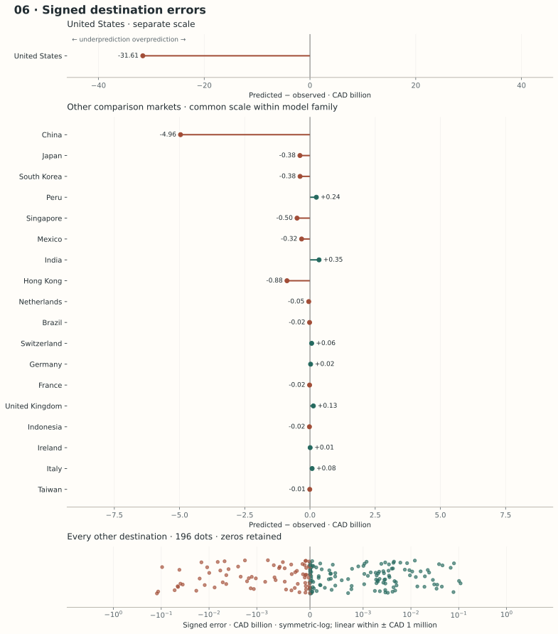
Predictive and structural critique
Predictive limitations. A common λ may shrink high-potential new cells sharply while reducing an established large flow. Sector-specific price shocks, new infrastructure and tariffs are absent. Probability estimation and positive-value regression can both err; their product feeds a nonlinear dollar adjustment. Eligible destinations greatly exceed the seven-country training network.
Structural and statistical limitations. Separating margins and retaining lagged trade gives a clearer economic story, but λ is estimated from one transition and tested on one subsequent transition. It may differ by sector/destination. HC3 does not fully account for dyad/product clustering, generated structural potential or retransformation uncertainty; its interval is narrower than fully integrated uncertainty would justify. Canadian GDP, population, manufacturing, internet, geography and external supply remain imperfect provincial proxies. The signal is neither an identified equilibrium nor evidence of commercial feasibility.
What this model teaches us
Adding a time mechanism changes the meaning of the output, not merely its error score. More defensible persistence logic and margin separation can coexist with worse predictions than simpler alternatives. The temporal benchmark and external provincial diagnostic ask different questions and must both remain visible.
Six-model overview
Actual top-ten destinations and their products are reported separately in this overview. Rows follow the progression from persistence and additive structure to flexible structural estimators and explicit partial adjustment. They are not ordered by WAPE and there is no “winner.” All 2025 figures are external diagnostics of frozen predictions.
| Model | Main idea | Training years | Lag? | Zeros? | Nonlinear? | Validation | 2025 CAD bn | 2025 destination WAPE | Top-ten overlap | Main weakness |
|---|---|---|---|---|---|---|---|---|---|---|
| 01 · Dynamic linear regression | Additive one-year persistence | 2023 predictors → 2024 response | Yes | Yes (log1p) | No | Transition + exporter transfer | 119.0 | 33.3% | 7/10 | One transition; missing manufacturing; lag dominance |
| 02 · Elastic Net regression | Regularized additive structure | 2024 only | No | Yes (log1p) | No | Nested exporter CV | 439.8 | 171.7% | 4/10 | Linearity and omitted-variable bias remain |
| 03 · Random Forest regression | Average randomized tree partitions | 2024 only | No | Yes (log1p) | Yes | Exporter-held-out 2024 | 550.4 | 209.3% | 4/10 | Weak extrapolation; no dynamics |
| 04 · Multilayer Perceptron | Learn nonlinear hidden representations | 2024 only | No | Yes (log1p) | Yes | Exporter-held-out 2024 | 627.9 | 257.8% | 4/10 | Optimizer/preprocessing dependence; no dynamics |
| 05 · Single-stage gradient boosting | Sequential single-response correction | 2024 only | No | Yes (log1p) | Yes | Exporter-held-out 2024 | 591.8 | 232.6% | 5/10 | Structural potential lacks adjustment clock |
| 06 · Dynamic two-stage boosted partial adjustment | Trade margins + geometric adjustment | 2022–2024, ordered phases | Yes | Yes (two margins) | Yes | Separate temporal test | 140.0 | 23.5% | 9/10 | One λ transition; generated-regressor uncertainty |
CAD bn = billions of Canadian dollars under the primary exchange-rate assumption. Models 2–5 estimate structural potential using 2024 information; Models 1 and 6 have explicit time mechanisms. Validation designs differ; do not read their internal scores as identical experiments.
How to read the errors
MAE = Mean Absolute Error; WAPE = Weighted Absolute Percentage Error; RMSLE = Root Mean Squared Logarithmic Error.
Destination metrics first sum HS4 predictions. Spearman compares destination ranks; top-ten overlap counts shared destinations. A high rank correlation can coexist with badly understated dollar exports. WAPE is not bounded by 100%: forecasts far above the observed scale can legitimately produce larger percentages. Signed error is predicted minus actual; relative error divides by actual and is undefined at zero. Top-ten mean/median errors use the frozen predicted ten, not an outcome-selected list.
Retransformation is part of the model
Models 1–5 use this same aggregate training-only dollar calibration, separately estimated in every fold. It corrects the training aggregate, not each conditional mean; heteroskedastic log errors can still distort dollar predictions. It never rescales to Alberta’s 2025 total. Model 6 uses its PDF’s positive-only exponential calibration, then probability weighting and dynamic adjustment.
What the comparison tells us
More features need not add useful forecast information. Model 1?s full dynamic specification has exporter-transfer cell WAPE 55.04%, compared with 23.89% for its lag-only diagnostic. Observable fundamentals and HS2 controls add interpretation, but the single transition and dollar retransformation do not guarantee improved transfer.
A good internal fit can coexist with weak validation. The bounded MLP?s random-cell stopping R? is 0.727, while its equal-exporter 2024 held-out destination WAPE is 140.36%. Repeated national characteristics make random cells an easier test than an excluded exporter. Neither test certifies transfer to small outside-network destinations or Alberta?s provincial production mix.
A clearer economic structure need not beat persistence. Model 6 separates entry and value and estimates a chronological adjustment mechanism. Yet its temporal mean exporter WAPE is 15.74%, versus 7.61% for a constant-USD lag benchmark on the same test. That result remains visible instead of being tuned away.
Models 2?5 have no provincial capacity or adding-up constraint; national Canadian proxies can imply aggregate values far above Alberta?s observed scale. Their errors are evidence about those assumptions and transfer conditions, not simply evidence that a particular algorithm is inferior. All reported export estimates are point predictions; coefficient standard errors do not supply integrated forecast uncertainty or prove a feasible business opportunity.
Actual Alberta domestic exports in 2025
Statistics Canada’s observed total is CAD 178.0 billion. The United States accounts for 85.43% of the total; U.S.-bound crude petroleum (HS4 2709) alone accounts for 62.27%. This concentration explains both the separate U.S. chart panel and why dollar errors can be dominated by petroleum. Destinations include separately reported territorial markets such as Hong Kong. These rankings describe actual 2025 outcomes. They were constructed in Phase B and did not feed model fitting, scoring eligibility or predicted rankings.
| Actual rank | Destination | 2025 domestic exports CAD bn |
|---|---|---|
| 1 | United States | 152.0 |
| 2 | China | 10.2 |
| 3 | Japan | 2.4 |
| 4 | Hong Kong | 1.4 |
| 5 | South Korea | 1.4 |
| 6 | Singapore | 1.2 |
| 7 | Mexico | 1.0 |
| 8 | Netherlands | 0.5 |
| 9 | Peru | 0.5 |
| 10 | Indonesia | 0.4 |
Actual top-five HS4 products within each actual top-ten destination
CAD million; official heading text where exact code matches the local CBSA hierarchy. Later label vintage supplies wording only.
| HS4 rank | HS4 | Product heading | Actual CAD m |
|---|---|---|---|
| 1 | 2709 | Petroleum oils and oils obtained from bituminous minerals, crude.Note: The General Tariff rate that applies to goods of this tariff item is the Most-Favoured-Nation Tariff rate. | 110,822 |
| 2 | 2711 | Petroleum gases and other gaseous hydrocarbons. | 11,573 |
| 3 | 0201 | Meat of bovine animals, fresh or chilled. | 2,845 |
| 4 | 3901 | Polymers of ethylene, in primary forms. | 2,633 |
| 5 | 2710 | Petroleum oils and oils obtained from bituminous minerals, other than crude; preparations not elsewhere specified or included, containing by weight 70% or more of petroleum oils or of oils obtained from bituminous minerals, these oils being the basic constituents of the preparations; waste oils. | 2,129 |
| HS4 rank | HS4 | Product heading | Actual CAD m |
|---|---|---|---|
| 1 | 2709 | Petroleum oils and oils obtained from bituminous minerals, crude.Note: The General Tariff rate that applies to goods of this tariff item is the Most-Favoured-Nation Tariff rate. | 6,320 |
| 2 | 2905 | Acyclic alcohols and their halogenated, sulphonated, nitrated or nitrosated derivatives. | 611 |
| 3 | 3901 | Polymers of ethylene, in primary forms. | 589 |
| 4 | 4703 | Chemical wood pulp, soda or sulphate, other than dissolving grades. | 437 |
| 5 | 1205 | Rape or colza seeds, whether or not broken. | 431 |
| HS4 rank | HS4 | Product heading | Actual CAD m |
|---|---|---|---|
| 1 | 1205 | Rape or colza seeds, whether or not broken. | 364 |
| 2 | 0203 | Meat of swine, fresh, chilled or frozen. | 362 |
| 3 | 2701 | Coal; briquettes, ovoids and similar solid fuels manufactured from coal. | 345 |
| 4 | 1001 | Wheat and meslin. | 231 |
| 5 | 0206 | Edible offal of bovine animals, swine, sheep, goats, horses, asses, mules or hinnies, fresh, chilled or frozen. | 135 |
| HS4 rank | HS4 | Product heading | Actual CAD m |
|---|---|---|---|
| 1 | 2709 | Petroleum oils and oils obtained from bituminous minerals, crude.Note: The General Tariff rate that applies to goods of this tariff item is the Most-Favoured-Nation Tariff rate. | 1,215 |
| 2 | 3901 | Polymers of ethylene, in primary forms. | 33 |
| 3 | 8517 | Telephone sets, including smartphones and other telephones for cellular networks or for other wireless networks; other apparatus for the transmission or reception of voice, images or other data, including apparatus for communication in a wired or wireless network (such as a local or wide area network), other than transmission or reception apparatus of heading 84.43, 85.25, 85.27 or 85.28. | 29 |
| 4 | 7602 | Aluminum waste and scrap. | 26 |
| 5 | 2701 | Coal; briquettes, ovoids and similar solid fuels manufactured from coal. | 23 |
| HS4 rank | HS4 | Product heading | Actual CAD m |
|---|---|---|---|
| 1 | 2709 | Petroleum oils and oils obtained from bituminous minerals, crude.Note: The General Tariff rate that applies to goods of this tariff item is the Most-Favoured-Nation Tariff rate. | 400 |
| 2 | 2701 | Coal; briquettes, ovoids and similar solid fuels manufactured from coal. | 180 |
| 3 | 7502 | Unwrought nickel. | 125 |
| 4 | 0203 | Meat of swine, fresh, chilled or frozen. | 124 |
| 5 | 0202 | Meat of bovine animals, frozen. | 91 |
| HS4 rank | HS4 | Product heading | Actual CAD m |
|---|---|---|---|
| 1 | 2709 | Petroleum oils and oils obtained from bituminous minerals, crude.Note: The General Tariff rate that applies to goods of this tariff item is the Most-Favoured-Nation Tariff rate. | 1,088 |
| 2 | 3901 | Polymers of ethylene, in primary forms. | 42 |
| 3 | 8431 | Parts suitable for use solely or principally with the machinery of headings 84.25 to 84.30. | 17 |
| 4 | 7502 | Unwrought nickel. | 13 |
| 5 | 8412 | Other engines and motors. | 5 |
| HS4 rank | HS4 | Product heading | Actual CAD m |
|---|---|---|---|
| 1 | 0201 | Meat of bovine animals, fresh or chilled. | 232 |
| 2 | 1205 | Rape or colza seeds, whether or not broken. | 206 |
| 3 | 1001 | Wheat and meslin. | 79 |
| 4 | 0206 | Edible offal of bovine animals, swine, sheep, goats, horses, asses, mules or hinnies, fresh, chilled or frozen. | 67 |
| 5 | 0203 | Meat of swine, fresh, chilled or frozen. | 63 |
| HS4 rank | HS4 | Product heading | Actual CAD m |
|---|---|---|---|
| 1 | 7502 | Unwrought nickel. | 238 |
| 2 | 2309 | Preparations of a kind used in animal feeding. | 118 |
| 3 | 1205 | Rape or colza seeds, whether or not broken. | 54 |
| 4 | 8105 | Cobalt mattes and other intermediate products of cobalt metallurgy; cobalt and articles thereof, including waste and scrap. | 40 |
| 5 | 0201 | Meat of bovine animals, fresh or chilled. | 15 |
| HS4 rank | HS4 | Product heading | Actual CAD m |
|---|---|---|---|
| 1 | 2710 | Petroleum oils and oils obtained from bituminous minerals, other than crude; preparations not elsewhere specified or included, containing by weight 70% or more of petroleum oils or of oils obtained from bituminous minerals, these oils being the basic constituents of the preparations; waste oils. | 286 |
| 2 | 1001 | Wheat and meslin. | 173 |
| 3 | 1514 | Rape (canola), colza or mustard oil and fractions thereof, whether or not refined, but not chemically modified. | 18 |
| 4 | 8705 | Special purpose motor vehicles, other than those principally designed for the transport of persons or goods (for example, breakdown lorries (wreckers), crane lorries (mobile cranes), fire fighting vehicles, concrete mixer lorries (concrete-mixers), road sweeper lorries (road sweepers), spraying lorries (spraying vehicles), mobile workshops, mobile radiological units). | 5 |
| 5 | 8431 | Parts suitable for use solely or principally with the machinery of headings 84.25 to 84.30. | 5 |
| HS4 rank | HS4 | Product heading | Actual CAD m |
|---|---|---|---|
| 1 | 1001 | Wheat and meslin. | 258 |
| 2 | 2503 | Sulphur of all kinds, other than sublimed sulphur, precipitated sulphur and colloidal sulphur. | 99 |
| 3 | 2301 | Flours, meals and pellets, of meat or meat offal, of fish or of crustaceans, molluscs or other aquatic invertebrates, unfit for human consumption; greaves. | 39 |
| 4 | 3901 | Polymers of ethylene, in primary forms. | 13 |
| 5 | 4705 | Wood pulp obtained by a combination of mechanical and chemical pulping processes. | 8 |
One data backbone, different mathematical assumptions
HS4 is the international four-digit product-heading level. HS2 through HS6 are internationally harmonized; Canadian HS8/HS10 extensions need not match another country’s national codes. This notebook preserves that assignment and compares six estimators at the bilateral product level before aggregating and ranking destinations.
Better prediction ≠ stronger economic assumptions. A model with lower error can rely on implausible national-to-provincial scale transfer. A model with clearer margin separation or time ordering can still predict worse.
Structural potential is the value implied by a contemporaneous feature relationship. A one-year prediction also needs a time-transition rule, implemented in Models 1 and 6. Neither is a proven commercial opportunity: none establishes causal effects, customers, profitability, tariff advantage, infrastructure capacity, demand certainty or guaranteed sales.
All data were read from supplied local copies. BACI HS2022 V202601 has 2022, 2023 and 2024 flows, measured in thousand current USD; v × 1,000 is aggregated from six-character HS6 to four-character HS4. The product metadata yields 1,229 headings. Seven exporters × six foreign partners = 42 directed pairs and 51,618 cells per year; valid absent flows are zero, never deleted to simplify logs.
WDI supplies exact-year 2022–2024 GDP, population, manufacturing and internet columns. GDP, population and internet are complete for the seven countries in 2023. Manufacturing is missing for Canada in 2023/2024 and the U.S. in 2022–2024. Each fit estimates medians from its own training subset and year. Imputation is a modelling assumption, not an observed manufacturing value. Model 1’s dynamic implementation is qualified accordingly. GeoDist is time invariant national geography.
| Feature family | Primary inputs | Definition/source |
|---|---|---|
| Economic size | log exporter/importer GDP | WDI NY.GDP.MKTP.CD · current USD |
| Population | log exporter/importer population | WDI SP.POP.TOTL · persons |
| Economic structure | exporter/importer manufacturing share | WDI NV.IND.MANF.ZS · % GDP |
| Connectivity | exporter/importer internet use | WDI IT.NET.USER.ZS · % population |
| Geography | log distance; border; official language | CEPII distw (km), contig, comlang_off |
| Product supply | log1p external exporter HS4 supply | BACI outside seven-country internal network |
| Product demand | log1p external importer HS4 demand | BACI outside seven-country internal network |
| Product market | log1p outside-network/world HS4 demand | All BACI flows outside internal network |
| Product identity | HS2 one-hot indicators from HS4 | Categorical; no numeric HS-code magnitude |
External aggregates and leakage
Here 𝒩 is the seven-country training network. Supply, demand and outside-network world demand exclude every internal network flow, so a training target cannot appear in its own product aggregate. Importer demand for a new outside-network destination includes its 2024 flows, including national Canadian flows; these are historical features, not Alberta 2025 targets, but they make out-of-network feature construction imperfectly comparable. We retain the PDF’s exclusion logic rather than redesigning Model 6.
The legal directory contains tariff-annex and guidance text captures, including 2026 material—not a clean pre-2025 country-pair legal-origin dataset. It is excluded from all primary models. Country identifiers join BACI numeric codes to ISO3 (WDI/GeoDist) and ISO2 (StatCan); obsolete duplicate records and Namibia’s missing ISO2 are recorded in the audit.
Alberta is separate; many inputs are Canadian
Alberta-specific information is its observed domestic destination–HS4 trade in 2023/2024; Models 1 and 6 use the 2024 lag for final scoring. Exporter GDP, population, manufacturing share, internet use, Canada-to-destination geography and external Canadian supply are national proxies. Calling Canadian GDP “Alberta GDP” would conceal a serious scale mismatch. Proxy features can suggest national manufacturing capacity Alberta does not possess; only the dynamic models preserve the province’s observed trade state.
Eligibility, scope and currency
Usable 2024 GDP, population, ISO identifiers and Canada-to-destination distance yield 185 eligible foreign destinations, derived rather than assumed. Every eligible destination is crossed with the fixed HS2022 headings. Known 2024 cells outside that grid (685 cells; CAD 806 m) receive identical constant-USD persistence in all six models. This disclosed fallback retains national/special headings and unscorable markets without training on them. No observed 2025 market or product determines eligibility. Actual-only 2025 cells receive zero prediction in evaluation, rather than being silently dropped.
Transfer is a major extrapolation problem: 93.5% of eligible destinations have 2024 GDP outside the training-network range; 56.2% have internet use outside that range (missing values are recorded separately). Exporter-held-out validation among seven large economies does not test these smaller destination profiles. Identical feature definitions do not guarantee comparable feature support.
Statistics Canada’s domestic-export HS6 extracts are filtered to Alberta province of origin, summed over all twelve months and U.S. states, then grouped to HS4 and destination. Annual destination totals reconcile exactly with the separate HS2 source. Domestic exports cover goods grown, extracted, manufactured or materially transformed in Canada; Alberta identifies provincial origin rather than the customs crossing location. Their values are current CAD dollars, not BACI USD. Statistics Canada?s concepts and valuation definitions confirm this scope and currency. These provincial domestic exports differ conceptually from reconciled international merchandise flows.
Primary CAD forecasts assume the known 2024 annual exchange rate, 1.3698 CAD/USD. Alberta 2024 lags divide by that rate; model fitting/dynamics use USD. Model 6’s PDF uses the realized 2025 rate 1.3978. That future rate appears only in a separately labelled ex-post reproduction diagnostic below, never in the primary frozen forecasts or fitting. Realized 2025 currency conversion is not a pre-2025 prediction. Annual rates: Bank of Canada.
A retrospective holdout, not a real-time vintage claim
BACI V202601 was released in January 2026; this WDI copy was updated July 2026. Exact predictor years precede the evaluation year, but revisions and release delays mean this is a retrospective experiment. It does not reconstruct what an analyst could actually have known on January 1, 2025.
A — fit and freeze: select hyperparameters inside permitted historical information, fit, score and save all bilateral predictions, destination ranks and top-five product ranks. Record timestamps and SHA-256 hashes.
B — external diagnostic: only then read Alberta 2025 outcomes, aggregate observed results and measure disagreement. Verify prediction files remain unchanged. 2025 never selects features, λ, calibration, eligibility or rankings.
Compact data audit · Full audit and reconciliations · Freeze manifest · Frozen destinations
Model 6 reproduction checks
The structural stages, λ estimation, temporal validation, preprocessing, product exclusions and default early stopping follow the local machine_learning_model.pdf and its supporting script. Checkpoints were computed independently; reference numbers were never assigned to fitted outputs.
| Checkpoint | Independently derived | PDF rounded check |
|---|---|---|
| lambda | 0.134342 | 0.134342 |
| mean exporter temporal destination wape | 15.74% | 15.74% |
| pdf currency alberta destination wape | 22.01% | 22.01% |
| pdf currency alberta total cad | CAD 142.9 bn | CAD 142.9 bn |
| observed alberta total cad | CAD 178.0 bn | CAD 178.0 bn |
The PDF-currency total and WAPE apply 1.3978 CAD/USD to the already-frozen USD forecast. Primary results use 1.3698; the difference is a disclosed reporting-rate assumption, not a fit change. Small differences from the rounded PDF checkpoints can reflect rounding and software versions; material deviations require investigation. Full precision is saved in reference checks.
Reproduce and inspect
The shared builder audits files, constructs features once, fits all models, freezes predictions, evaluates and publishes the notebook. Compact local caches avoid rereading large BACI files. Raw files are never copied into this repository. Cache files are ignored by git; run --fresh to rebuild them.
python research/harmonized-system/4-hs-data-analysis/build_model_comparison.py
python -m http.server 8000
Override local roots with TRADE_RAW_ROOT, TRADE_QUESTION1_REFERENCE and TRADE_TESTING_REFERENCE. Analysis dependencies are documented in the script; the published page has no Python or npm runtime dependency.
References and Data Sources
Local copies supply the analysis. The links document their sources and estimators; no large dataset was downloaded for this task.
- CEPII BACI — HS2022 V202601, annual bilateral trade. Local readme confirms thousand-USD units; Gaulier and Zignago (2010), CEPII Working Paper 2010-23.
- CEPII GeoDist — population-weighted distance, contiguity and official language.
- World Bank World Development Indicators — four exact indicator codes listed above; local 2022–2024 extract.
- Statistics Canada merchandise trade data and Trade Data Explorer — local provincial domestic-export files for 2023, 2024 and 2025.
- Bank of Canada annual exchange rates — 2024 primary reporting assumption; 2025 ex-post PDF reproduction convention.
- CBSA T2026-2 Customs Tariff hierarchy — local exact-code HS4 labels only, not predictor or tariff assumptions.
- scikit-learn LinearRegression and ElasticNet; Zou and Hastie (2005), Regularization and Variable Selection via the Elastic Net.
- scikit-learn RandomForestRegressor; Breiman (2001), Random Forests.
- scikit-learn MLPRegressor and supervised neural network guide.
- HistGradientBoostingRegressor, HistGradientBoostingClassifier, histogram boosting guide; Friedman (2001), Greedy Function Approximation: A Gradient Boosting Machine.
- Grouped cross-validation and preprocessing pipelines; statsmodels OLS for HC3 and dyad-cluster diagnostics.
- Supplied methodological source:
testing_models/machine_learning_model.pdf, 20 pages; supporting read-onlycode/test_boosted_partial_adjustment_model.py. Neither is redistributed or modified.